Kinks & Paraphilias
Where our more unusual desires come from, and when an unusual interest becomes a problem.
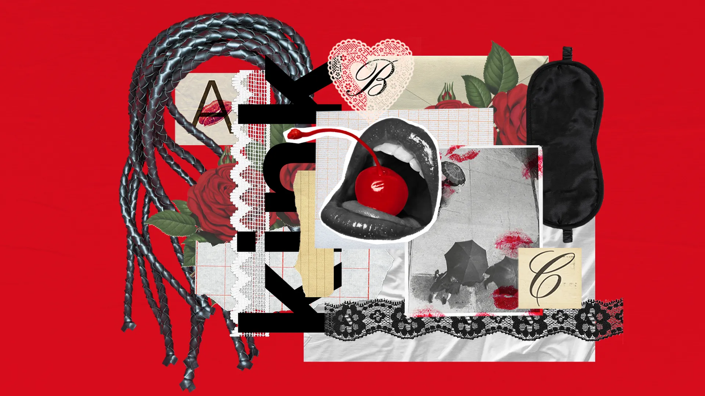
Most people, at some point, do something a partner might call kinky. A striptease is a mild form of showing off (exhibitionism). Enjoying the sight of a partner undressing is a mild form of watching (voyeurism). Even interests that seem far from sex can share the same psychology. The endurance athlete who chases the burn of a long race is testing the edges of pain and control. It's not so different for a person exploring bondage or spanking with a trusted partner. The raw materials of "unusual" desire are more common than we might think.
Here we explore a wide range of kinks and fetishes, from the very common to the rare. We look at how these interests may form in the first place. We then turn to the harder cases: the point at which a sexual interest starts to cause real harm, either to the person who has it or to someone else. We close with what is known about treatment for people who want or need to change. Throughout, we'll use one core principle to guide us. An interest being unusual is not the same as it being unhealthy. What separates a harmless kink from a genuine disorder is not how "weird" it might seem, but whether it causes distress, impairment, or harm.
14.1 Kinks vs. "Abnormal" Sexual Behavior
When it comes to sex, what counts as "abnormal"? This turns out to be one of the most important ideas in the whole chapter, because the wrong definition can label millions of healthy people as sick.
Three Ways to Define "Abnormal"
Researchers have used at least three approaches to categorize what behavior is "abnormal" (Nolen-Hoeksema, 2017)ReferenceNolen-Hoeksema, S. (2017). Abnormal psychology (7th ed.). McGraw-Hill Education.. The statistical definition calls a behavior abnormal if few people do it. However, many people practice behaviors that are rare but are perfectly safe. Standing on your hands during sex is rare, but there is nothing unhealthy about it. Rarity alone gives us little information on what is healthy.
The sociological definition calls a behavior abnormal if it violates the norms of a society. This one at least takes culture seriously, since what shocks people in one time or place is ordinary in another. But it also means a behavior is "deviant" simply because the surrounding culture disapproves, which can turn harmless private acts into social crimes. In roughly half the world, kissing a lover on the mouth is considered strange (Jankowiak et al., 2016)ReferenceJankowiak, W., Garcia, J. R., & Volsche, S. (2016). The half of the world that doesn't make out. Sapiens.. Does that mean it's wrong?
The psychological definition is the one actual clinicians use (Nolen-Hoeksema, 2017)ReferenceNolen-Hoeksema, S. (2017). Abnormal psychology (7th ed.). McGraw-Hill Education.. It focuses on what are sometimes called the four Ds. Whether a behavior is…
- Dysfunctional, impairing daily life
- Causes Distress, real emotional suffering
- Highly Deviant in a way that signals a deeper problem
- Dangerous to the self or others
Notice what this definition does. It stops asking "Is this strange?" and starts asking "Is this hurting anyone?"
Kinks, Fetishes, and Paraphilias
A fetishFetishA sexual attraction to a specific object or body part, often something worn on or close to the body.View in glossary → is a sexual attraction to a specific object or body part, often something worn on or close to the body, such as lingerie, leather, shoes, or feet. For some people the fetish object is a fun addition to sex; for a smaller number it becomes central, so that arousal is difficult without it. When the eroticized focus is a body part rather than an object, we call it partialismPartialismAn intense sexual focus on a specific body part.View in glossary → — an intense focus on, say, feet, hands, or the neck.
A kinkKinkAny sexual practice considered outside the conventional; the term is subjective.View in glossary → is a broader term for any sexual practice considered outside the conventional. Because "conventional" depends on the observer, the word is subjective. One person's kink is another person's Tuesday. People may describe bondage, public sex, role-play, or dozens of other interests as kinky.
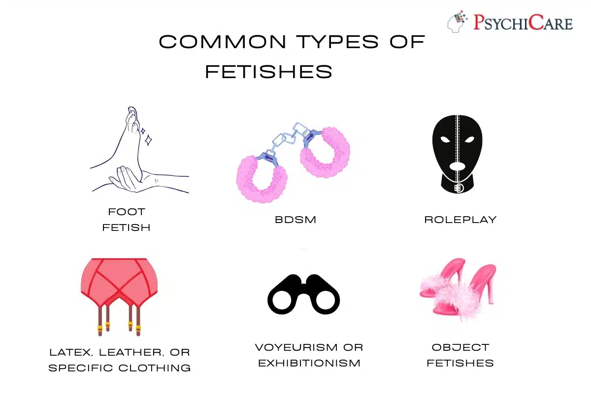
According to the DSM-5, someone can be diagnosed as having a paraphilic disorderParaphilic DisorderA paraphilia that causes the person serious distress or impairment, or that involves harm to non-consenting others.View in glossary → when this causes the person serious distress or impairment, or when it involves harm to others, such as a non-consenting person (American Psychiatric Association, 2013)ReferenceAmerican Psychiatric Association. (2013). Paraphilic disorders. In Diagnostic and statistical manual of mental disorders (5th ed., pp. 685–705). American Psychiatric Publishing.. A person who enjoys whipping or spanking a consenting adult doesn't have a paraphilic disorder. However, someone who deeply desires harming others sexually without their consent does. Common paraphilic disorders include non-consensual sex (rape), pedophilia (sex with children), and hypersexuality (uncontrollable sexual urges that endanger oneself or others). The latter part of this chapter will be devoted to the discussion of paraphilic disorders and their treatments.
Maya loves acting out elaborate role-play scenarios with her partner. It is unusual among her friends, but both partners enjoy it, and it causes no distress or harm. According to the psychological approach used in this chapter, Maya's interest is best described as:
14.2 Common Kinks and Fetishes
Kinks can attach to almost any object, sensation, or scenario. This section is a brief tour through some of the most common kinds.
Foot Fetishes
If there is a "most popular" fetish, researchers usually point to feet and shoes. Around 5% of men report having a foot fetish, while nearly 20% of men say they occasionally fantasize about feet (Scorolli et al., 2007)ReferenceScorolli, C., Ghirlanda, S., Enquist, M., Zattoni, S., & Jannini, E. A. (2007). Relative prevalence of different fetishes. International Journal of Impotence Research, 19(4), 432–437.. Sigmund Freud offered an early and now largely symbolic guess that the foot stands in for the penis. A more modern hypothesis looks at the brain. The somatosensory cortexSomatosensory CortexThe strip of brain that processes touch, organized like a map of the body.View in glossary →, the strip of brain that processes touch, is laid out like a map of the body — but the map is not arranged the way the body is. On this map, the region for the genitals sits right next to the region for the feet. Neuroscientist V.S. Ramachandran proposed that this close anatomical proximity may allow for "neural crosstalk" or spatial overlap between these two distinct regions (Ramachandran & Blakeslee, 1998; Turnbull et al., 2014)ReferencesRamachandran, V. S., & Blakeslee, S. (1998). Phantoms in the brain: Probing the mysteries of the human mind. William Morrow.
Turnbull, O. H., Lovett, V. E., Chaldecott, J., & Lucas, M. D. (2014). Reports of intimate touch: Erogenous zones and somatosensory cortical organization. Cortex, 53, 146–154.. This may cause the feet to become an erogenous zone, with sensations from the feet and genitals getting intermixed. Whatever the cause, the internet has made foot-focused communities easy to find, which helps people with the interest feel less alone.
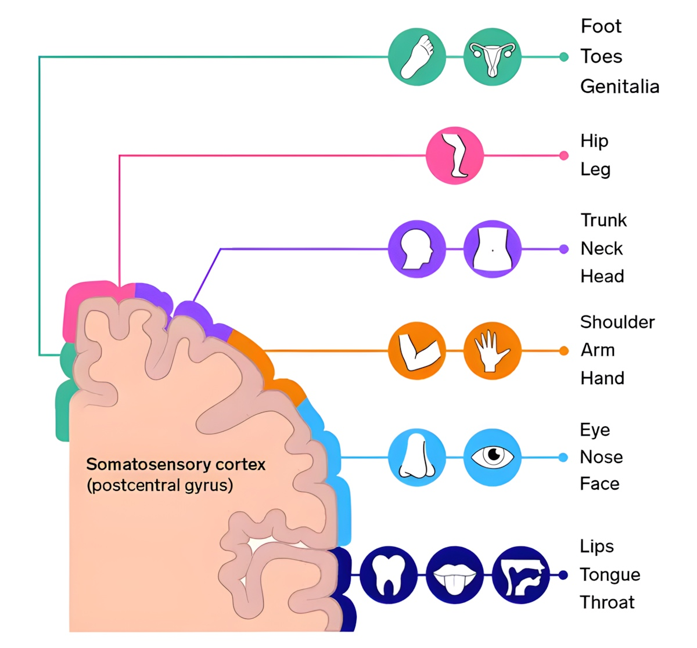
Objectophilia
ObjectophiliaObjectophiliaA strong sexual and emotional attachment to an inanimate object; also called object sexuality.View in glossary →, also called object sexuality, is a strong sexual and emotional attachment to an inanimate object. In rare and widely reported cases the object is a landmark; one woman is well known for "marrying" the Eiffel Tower (Cassar, 2016)ReferenceCassar, J. (2016, August 27). The most misunderstood sexuality explained. news.com.au.. What sets objectophilia apart from an ordinary fetish is its relational quality — many people who identify this way feel strongly that the object loves them back. Some data suggest that a notable share of people with object sexuality are on the autism spectrum, which can make relationships with other people feel more difficult than a bond with an object (Kabiry, 2020; Simner et al., 2019)ReferencesKabiry, D. M. (2020). Objectum sexuality or objectophilia. International Journal of Advanced Studies in Sexology, 2(1).
Simner, J., Rehme, M. K., Carmichael, D. A., Bastin, M. E., Sprooten, E., McIntosh, A. M., Whalley, H. C., & Hughes, J. E. A. (2019). Social responsiveness to inanimate entities: Altered white matter in a "social synaesthesia." Neuropsychologia, 91, 282–289..
Furries
FurriesFurriesPeople who enjoy animal characters with human traits; the community is mostly social and artistic, though some engage with it sexually.View in glossary → are people who sexually fantasize about anthropomorphic animals, which are animals that walk upright, talk, and feel the way humans do. Furries often have an animal persona (or fursona), which is the type of anthropomorphic animal they fantasize about being. These fantasies may or may not involve sex, but they most often involve sexually charged activities, such as being physically cared for or physically controlled (bondage). The furry community is large, diverse, and often organized around art, costumes, and conventions. Research suggests many people first find themselves drawn to anthropomorphic characters in early puberty, and that today a common route runs through online pornography featuring such characters (Hsu & Bailey, 2019)ReferenceHsu, K. J., & Bailey, J. M. (2019). The "furry" phenomenon: Characterizing sexual orientation, sexual motivation, and erotic target identity inversions in male furries. Archives of Sexual Behavior, 48(5), 1349–1369.. Joining the community can then deepen the interest through role-play and dress-up.
Hentai
HentaiHentaiA Japanese term for animated or drawn pornography.View in glossary → is a Japanese term for animated or drawn pornography. Because it is a form of media rather than a record of real acts, it can portray taboo or fantastical scenarios that people would never enact in life, and it has grown popular in many countries as internet access has spread. While hentai itself is not necessarily a kink, given it's become a normative form of porn, hentai often explores kinks that wouldn't be safe to play out in real life. Since a person can draw anything they can imagine, hentai often features situations that are far beyond the realm of what's possible. Common kinks explored in hentai include exaggerated physical anatomy — such as extremely large penises and breasts — extreme power dynamics — such as keeping someone as a "sex slave" — and dangerous sexual behavior — such as ingesting a lover whole. Different nations censor different content, but much of it is legal, and for some viewers it offers a low-stakes way to explore fantasies that may otherwise be impossible to fulfill.
Infantilism
InfantilismInfantilismA fetish built around fantasies of returning to infancy.View in glossary → is a fetish built around fantasies of returning to infancy, sometimes by wearing diapers or taking on an infant-like role. An adult who enjoys this is sometimes called an adult babyAdult BabyAn adult who takes on an infant-like role as part of infantilism.View in glossary →, and the acronym ABDLABDLThe acronym for adult-baby diaper lovers; adults who engage in infantilism role-play involving diapers.View in glossary → stands for adult-baby diaper lovers. It is important to be clear that infantilism does not involve children and is not pedophilia, though the two are often confused. The role-play typically involves a caregiver partner, and it may or may not include sex. There is also often fetishizing of poop or pee in infant-play, with adult partners wearing diapers and soiling themselves, so that they need to be changed. This mixes several common components of kinks, such as unequal power dynamics and embarrassment.
Asphyxiophilia & Breath Play
AsphyxiophiliaAsphyxiophiliaThe practice of restricting oxygen for sexual pleasure; also called breath play.View in glossary →, sometimes called breath play, is the practice of restricting oxygen for sexual pleasure. Choking and airflow restriction during sex are more common than many assume. In one study of U.S. undergraduates, 21% of women and 11% of men reported being choked during sex, and 12% of women and 20% of men reported choking a partner (Herbenick et al., 2021)ReferenceHerbenick, D., Fu, T., Valdivia, D. S., Patterson, C., Gonzalez, Y. R., Guerra-Reyes, L., Eastman-Mueller, H., Beckmeyer, J., & Rosenberg, M. (2021). What is rough sex, who does it, and who likes it? Findings from a probability sample of U.S. undergraduate students. Archives of Sexual Behavior, 50(3), 1183–1195.. Two things seem to drive the appeal: the power dynamic of one partner controlling another, and a physical effect. When oxygen is reduced, some people feel a brief, floaty "high" known as hypoxic euphoriaHypoxic EuphoriaThe brief, floaty "high" some people feel when oxygen is reduced.View in glossary → before consciousness fades (Chater, 2021)ReferenceChater, A. M. (2021). Does intentional asphyxiation by strangulation have addictive properties? Addiction, 116(4), 718–724..
That high is also what makes the practice dangerous. The riskiest form is auto-asphyxiophiliaAuto-asphyxiophiliaRestricting one's own oxygen while masturbating alone, the most dangerous form of breath play because no one is present to intervene.View in glossary →, in which a person restricts their own oxygen while masturbating alone, with no one present to intervene. If the person loses consciousness, the result can be death. The same danger drives the so-called "choking game" among some youth, who chase the high without any sexual aim. Breath play can be part of a healthy sex life only when partners stay alert to each other and never push toward blackout.

Urophilia & Coprophilia
UrophiliaUrophiliaThe practice of urinating on a partner or being urinated on; also called watersports or a golden shower.View in glossary →, also called watersports or a golden shower, is the practice of urinating on a partner or being urinated on. It is often linked to BDSM as an act of submission or humiliation. It is relatively common and generally low-risk, since urine is usually sterile. CoprophiliaCoprophiliaA fetish involving defecating on a partner; it carries a higher health risk than urophilia because feces can transmit bacteria, viruses, and parasites.View in glossary → is a fetish that involves pooping on another person. Playing with feces carries a higher risk, given poop can be infected with dangerous bacteria, viruses, or parasites. It's not advisable to spread poop on any part of the body that could lead it to enter the bloodstream, such as in a person's mouth, ears, nose, or eyes.
Urophilia is much more common of the two fetishes, with 6% of men and 4% of women reporting they obtained sexual pleasure from urinating on a partner or being urinated on (Joyal & Carpentier, 2017)ReferenceJoyal, C. C., & Carpentier, J. (2017). The prevalence of paraphilic interests and behaviors in the general population: A provincial survey. The Journal of Sex Research, 54(2), 161–171.. By comparison, less than 1% of men and far less than 1% of women are sexually aroused by feces (Arnone et al., 2024)ReferenceArnone, J. M., Conti, R. P., & Preckajlo, J. H. (2024). Coprophilia and coprophagia: A literature review. Journal of the American Psychiatric Nurses Association, 30(1), 8–16.. Both fetishes are rooted in obtaining sexual pleasure from feeling "dirty" and shamed, or causing another person to feel that way. It's unclear what drives these fetishes, but as we'll soon explore, people can sexualize just about anything if there is a sexual conditioning around it.
Transvestism
TransvestismTransvestismSexual arousal from wearing clothing associated with the other sex; also called transvestic fetishism, and distinct from being transgender.View in glossary → (also called transvestic fetishism) refers to becoming sexually aroused by wearing clothing associated with the other sex — most often a self-identified heterosexual man aroused by wearing items such as lingerie or stockings. It is more common than many assume; studies suggest around 3% of men in Western countries report some experience of it (Långström & Zucker, 2005)ReferenceLångström, N., & Zucker, K. J. (2005). Transvestic fetishism in the general population: Prevalence and correlates. Journal of Sex & Marital Therapy, 31(2), 87–95.. In rare cases, the focus turns inward into autogynephiliaAutogynephiliaA debated concept describing a man's sexual arousal at the thought of himself as a woman.View in glossary →, in which a man is aroused by the thought of himself as a woman. This can involve a man wearing prosthetic breasts or tucking his penis between his legs to mimic having a vulva.
Transvestism is not the same as being transgender. A transgender woman who wears women's clothing is expressing her gender identity, not seeking sexual arousal from the clothing or "pretending" to be a woman. Her clothing means the same thing to her as clothing means to any woman. It can be a sign of her femininity, fashion sense, or simply something comfortable to wear. Transvestic fetishism, by contrast, is specifically about sexual arousal from the act of wearing certain garments.
The vast majority of transvestites are heterosexual, cisgender men (Docter & Prince, 1997; Långström & Zucker, 2005)ReferencesDocter, R. F., & Prince, V. (1997). Transvestism: A survey of 1032 cross-dressers. Archives of Sexual Behavior, 26(6), 589–605.
Långström, N., & Zucker, K. J. (2005). Transvestic fetishism in the general population: Prevalence and correlates. Journal of Sex & Marital Therapy, 31(2), 87–95.. Most are married to women who actively participate in their fetish. One famous example is world-class boxer Oscar De La Hoya, who came out as a transvestite when photos of him wearing women's lingerie leaked (Browning, 2017)ReferenceBrowning, B. (2017). Oscar De La Hoya admits to crossdressing photos. LGBTQ Nation.. His wife at the time, Millie Corretjer, was an outspoken defender of her husband, saying that she enjoyed it when he wore women's clothing in the bedroom and often picked out outfits for him to wear.
A researcher notes that a specific fetish appears in one culture but not another, and that it is far more often reported by men than women. Which explanation best fits the chapter's framing?
Which statement correctly distinguishes transvestism from being transgender?
14.3 BDSM and Erotic Power Play
BDSMBDSMAn umbrella term for bondage and discipline, dominance and submission, and sadism and masochism.View in glossary → is an umbrella term for a family of activities usually understood as bondage and discipline, dominance and submission, and sadism and masochism. Together, this group constitutes the most common types of kinks. At its center is an exchange of power that, for many, enhances sexual excitement and pleasure.
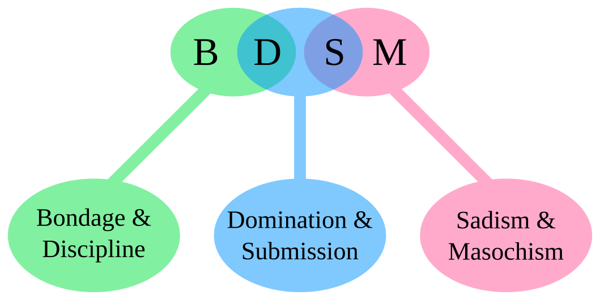
Roles
A sadistSadistA person who enjoys giving pain or control.View in glossary → enjoys giving pain or control, while a masochistMasochistA person who enjoys receiving pain or control.View in glossary → enjoys receiving it. The broader term sadomasochismSadomasochismThe giving and receiving of physical or psychological pain and control for pleasure.View in glossary → is a more inclusive term that covers both aspects. This kink involves many ways of exchanging power, pain, and control. Some common forms are spanking, paddling, and whipping, all methods that used to be commonly employed for physical punishment. BondageBondageRestraining a partner as part of BDSM play.View in glossary →, or tying people up, is another core component, with sadomasochists often employing ropes, handcuffs, or restraints to take away a partner's ability to control their body. This gives complete control to the person who is not bonded. In a given scene, the dominant partner is often called the topTopThe dominant partner in a BDSM scene.View in glossary → and the submissive partner the bottomBottomThe submissive partner in a BDSM scene.View in glossary →.
Like every interest in this chapter, BDSM lives on a continuumContinuumThe idea that a sexual interest can be held anywhere from very mild to very intense.View in glossary →. It can be as gentle as light spanking or being told what to do, or as involved as complex roleplaying with characters, scenes, and props (Weiss, 2015)ReferenceWeiss, M. (2015). BDSM (bondage, discipline, domination, submission, sadomasochism). In P. Whelehan & A. Bolin (Eds.), The international encyclopedia of human sexuality (Vol. 1). Wiley-Blackwell.. What holds across that whole range is that activities are usually negotiated beforehand, and roles are defined. That structure is a large part of what keeps BDSM safe and pleasurable for all involved.
How Common Is It?
BDSM is far more common in fantasy than in regular practice. Researchers estimate that roughly 8% of people actually practice BDSM, while nearly 70% report they've fantasized about having BDSM sex (Brown et al., 2020; Holvoet et al., 2017)ReferencesBrown, A., Barker, E. D., & Rahman, Q. (2020). A systematic scoping review of the prevalence, etiological, psychological, and interpersonal factors associated with BDSM. The Journal of Sex Research, 57(6), 781–811.
Holvoet, L., Huys, W., Coppens, V., Seeuws, J., Goethals, K., & Morrens, M. (2017). Fifty shades of Belgian gray: The prevalence of BDSM-related fantasies and activities in the general population. The Journal of Sexual Medicine, 14(9), 1152–1159.. Interest is widespread across genders, and the novel/movie Fifty Shades of Grey pushed the topic into the mainstream. Now there are many apps and social media sites devoted to the BDSM community, such as FetLife, KinkD, and Kinkoo. It's now common to find BDSM groups and meet-ups listed on everyday social media services, like Meetup.com or the Nextdoor app. Over the past few decades, kinks have become commonplace across most of the Western world.
Is It Really About Pain?
A common assumption is that BDSM is about getting hurt. More often it is about the idea and drama of pain, but practiced safely where no long-term damage is done. Practitioners often describe scenes in theatrical terms, with agreed-upon roles, "props," and limits — much like actors performing in a play. Most often, BDSM practices that appear painful, such as being whipped or spanked, don't do more than cause a minor bruise at worst. Furthermore, sexual arousal itself tends to dull the perception of pain, so sensations that might be unpleasant in daily life can feel very different during BDSM play.
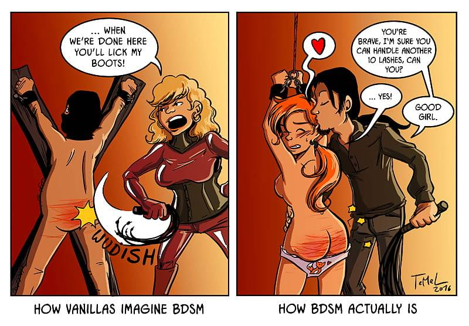
Benefits of BDSM
BDSM appears to yield benefits for many individuals and couples. Both tops and bottoms report feeling closer to their partners and less stressed after engaging in BDSM scenes (Ambler et al., 2017)ReferenceAmbler, J. K., Lee, E. M., Klement, K. R., Loewald, T., Comber, E. M., Hanson, S. A., Cutler, B., Cutler, N., & Sagarin, B. J. (2017). Consensual BDSM facilitates role-specific altered states of consciousness: A preliminary study. Psychology of Consciousness: Theory, Research, and Practice, 4(1), 75–91.. Part of this may come from altered states of consciousness. Bottoms often enter a state researchers call transient hypofrontalityTransient HypofrontalityAn altered state, often experienced by the bottom in BDSM, in which front-of-brain activity quiets and pain fades into a floating, peaceful feeling.View in glossary →, in which activity in the front of the brain quiets. This results in a sense of being in the moment, with no distracting thoughts running through their head. In this state, many bottoms report feeling like they are floating and completely at peace. Tops more often enter flowFlowAn altered state, often experienced by the top in BDSM, marked by focused, absorbed attention and loss of self-consciousness.View in glossary →, where they are so concentrated on bringing their partner pleasure that they are completely absorbed in the task.
Hormone data tell a similar story. In one careful study, the stress hormone cortisol was carefully measured before and after sadomasochists engaged in BDSM-style sex. Cortisol actually rose for submissive partners during a scene — the body was genuinely activated — but when the scene went well, cortisol levels dropped steeply afterward (Sagarin et al., 2009)ReferenceSagarin, B. J., Cutler, B., Cutler, N., Lawler-Sagarin, K. A., & Matuszewich, L. (2009). Hormonal changes and couple bonding in consensual sadomasochistic activity. Archives of Sexual Behavior, 38(2), 186–200.. This was related to feeling a sense of release and pleasure. Partners reported feeling closer after this exchange.
BDSM sex can benefit couples beyond sexual pleasure. Because it requires partners to talk openly about desires and limits, couples who share these interests often report high satisfaction and strong emotional bonds (Ambler et al., 2017; Strizzi, 2021)ReferencesAmbler, J. K., et al. (2017). Consensual BDSM facilitates role-specific altered states of consciousness: A preliminary study. Psychology of Consciousness: Theory, Research, and Practice, 4(1), 75–91.
Strizzi, J. M., Özer, Ö., & Fernández-Alcántara, M. (2021). Sexual satisfaction and BDSM.. Among couples who practice BDSM, nearly 90% report being "satisfied" or "completely satisfied" with their relationship, well above ratings in the general population (Rogak & Connor, 2018)ReferenceRogak, H. M. E., & Connor, J. J. (2018). Practice of consensual BDSM and relationship satisfaction. Sexual and Relationship Therapy, 33(4), 454–469.. These couples also showed greater sexual satisfaction than average couples.
Not a Sign of Illness
For most of the twentieth century, psychologists treated BDSM as a symptom of mental illness. However, more recent studies find quite the opposite. Compared with the general population, BDSM practitioners show, on average, lower levels of depression, anxiety, and post-traumatic stress, and they are not more likely to have a history of sexual trauma (Brown et al., 2020; Richters et al., 2008)ReferencesBrown, A., Barker, E. D., & Rahman, Q. (2020). A systematic scoping review of the prevalence, etiological, psychological, and interpersonal factors associated with BDSM. The Journal of Sex Research, 57(6), 781–811.
Richters, J., de Visser, R. O., Rissel, C. E., Grulich, A. E., & Smith, A. M. A. (2008). Demographic and psychosocial features of participants in bondage and discipline, "sadomasochism" or dominance and submission (BDSM): Data from a national survey. The Journal of Sexual Medicine, 5(7), 1660–1668.. One large study of more than 900 practitioners found them to be, if anything, more extroverted, more open to new experiences, and lower in neuroticism than non-practitioners (Wismeijer & van Assen, 2013)ReferenceWismeijer, A. A. J., & van Assen, M. A. L. M. (2013). Psychological characteristics of BDSM practitioners. The Journal of Sexual Medicine, 10(8), 1943–1952.. They also tend to be lower in agreeableness — robust mental health, but not necessarily people-pleasers (Jefferson, 2018)ReferenceJefferson, S. (2018). Psychological and demographic differences of BDSM practitioners [Honors thesis, Bridgewater State University]. Virtual Commons..
None of this means every BDSM practitioner is perfectly healthy, and the DSM-5 does include sexual sadism disorder and sexual masochism disorder. But those diagnoses apply only when the activity causes real distress or impairment, or involves a non-consenting partner. The vast majority of people who practice BDSM do so happily and with willing partners.
Consent Is the Whole Game
If one idea defines healthy BDSM, it is consentConsentFreely given, informed agreement to a sexual activity; in BDSM, the core safeguard that separates play from abuse.View in glossary →. Communities take it so seriously that they have coined mottos to capture it, such as Safe, Sane, and Consensual (SSC) and Risk-Aware Consensual Kink (RACK) (Dunkley & Brotto, 2020)ReferenceDunkley, C. R., & Brotto, L. A. (2020). The role of consent in the context of BDSM. Sexual Abuse, 32(6), 657–678.. Partners typically educate themselves about risk, agree on exactly what is and is not allowed, and set a safewordSafewordA prearranged word or gesture that immediately stops a BDSM scene.View in glossary → — a prearranged word or gesture that stops everything at once. That last tool matters, because "no" can be part of a role-play, but the safeword never is. Consent, honesty, and safety are what separate erotic power play from abuse.
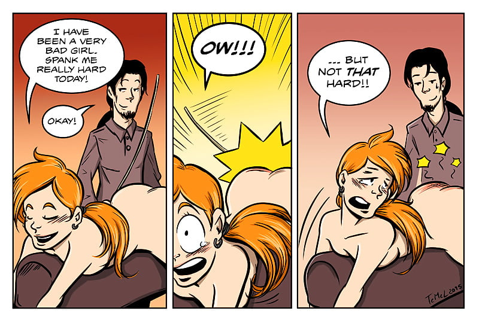
If you want to try out sadomasochistic sex, or already are, keep in mind the 4 Cs: communication, consent, caution, and care. Every scene should involve…
- Discussing what will happen beforehand
- Obtaining explicit consent
- Proceeding with attention to safety
- Providing aftercare when it's over, such as holding, cuddling, and feeling close
Devon and Sam are new to BDSM and want to keep their play safe. Which practice best reflects the consent norms described in the chapter?
A friend claims that people who enjoy BDSM must be mentally unhealthy or have a trauma history. Based on the research reviewed here, the most accurate response is:
14.4 Where Do Kinks Come From?
Why do some people develop a foot fetish, an interest in bondage, or a taste for role-play, while others do not? There is no single answer, but the strongest thread running through the research involves the way our minds pair arousal with whatever happens to be present when we feel it.
Classical Conditioning
You may recall Ivan Pavlov's dogs, who learned to salivate at the ring of a bell. This occurred because the bell was repeatedly paired with food, so eventually the dogs started to react to the bell as if it was food. This is a process known as classical conditioningClassical ConditioningA form of learning in which a neutral cue, paired repeatedly with something that already produces a response, comes to produce that response on its own.View in glossary →, which is when a neutral stimulus (one that doesn't normally elicit a reaction) is paired again and again with something that already triggers a response, and eventually comes to trigger the response on its own. Many researchers believe kinks and fetishes form the same way, with a once-neutral object taking on a sexual charge when paired with sexual arousal enough times.
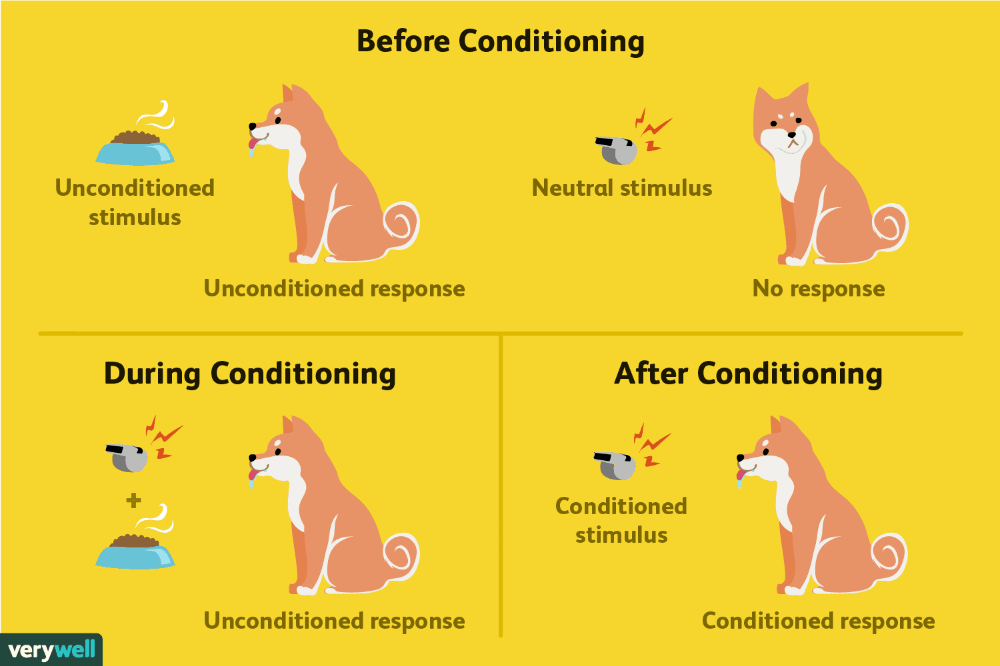
Scientists have actually used this technique to induce fetishes in the lab. In a classic experiment, men were shown erotic images alongside pictures of knee-high boots. Throughout the experiment, participants' penises were measured for signs of arousal (erection). After only 5 pairings, simply showing these men images of boots led them to become erect (Rachman, 1966; Rachman & Hodgson, 1968)ReferencesRachman, S. (1966). Sexual fetishism: An experimental analogue. The Psychological Record, 16(3), 293–296.
Rachman, S., & Hodgson, R. J. (1968). Experimentally-induced "sexual fetishism": Replication and development. The Psychological Record, 18(1), 25–27.. Strikingly, the effect then spread to similar cues — a process called generalizationGeneralizationWhen a learned response spreads from the original cue to similar cues.View in glossary → — with most participants showing arousal toward other shoes as well. This method of creating fetishes has been used by researchers to create sexual arousal toward many different stimuli over the years, including abstract art, piggy-banks, and images of guns (Akins, 2004; Hoffmann et al., 2004; Plaud & Martini, 1999)ReferencesAkins, C. K. (2004). The role of Pavlovian conditioning in sexual behavior: A comparative analysis of human and nonhuman animals. International Journal of Comparative Psychology, 17(2–3), 241–262.
Hoffmann, H., Janssen, E., & Turner, S. L. (2004). Classical conditioning of sexual arousal in women and men. Archives of Sexual Behavior, 33(1), 43–53.
Plaud, J. J., & Martini, J. R. (1999). The respondent conditioning of male sexual arousal. Behavior Modification, 23(2), 254–268.. This lines up with the classic phrase in psychology, "What fires together, wires together." Whatever sensations happen to be present during arousal — a smell, a texture, an object — can get wired into a person's sexual response.

This conditioning view fits a common observation: many fetishes seem to take shape around puberty, when sexual feelings are new and intense. A teenager who repeatedly experiences arousal in the presence of a particular object may form a lasting link. Take, for example, a teenage boy who regularly masturbates with his socks. This is a common practice, as socks can provide a pleasurable texture to rub the penis on and it makes clean-up after ejaculation a breeze. If that teen repeatedly experiences sexual arousal while also experiencing the sight, tactile sensation, and smell of socks, then he may develop a fetish for them. Given that fetishes tend to generalize to similar objects, it would make sense for that boy to eventually develop a foot fetish.
Adult sexuality appears to be less easily rewired, which may be why lab studies with grown men produce weaker effects than the pubertal timing would suggest. This may explain why most fetishes first crop up during early teenage years, when puberty is just beginning to produce feelings of sexual arousal. A 2022 study found that the average age for the onset of kink fantasies is approximately 15 years old, with 76.4% of participants reporting that their interests developed before age 18 (Walker & Kuperberg, 2022)ReferenceWalker, A. M., & Kuperberg, A. (2022). Pathways and patterns of entrance into BDSM. Archives of Sexual Behavior, 51(2), 1045–1062.. Other studies suggest fetishes can even be developed earlier, around ages 6–9, as childhood fascination with certain objects and materials (leather, silk) take on sexual meaning later in life (Grimes, 2021; Massie & Szajnberg, 1997)ReferencesGrimes, A. (2021). The science of fetishes. Osmosis Magazine, 2019(1).
Massie, H., & Szajnberg, N. (1997). The ontogeny of a sexual fetish from birth to age 30 and memory processes. The International Journal of Psychoanalysis, 78(4), 755–771.. All of this appears to work through the process of classical conditioning, in which non-sexual objects take on a sexual charge through repeated pairing with arousal.
These new sexual feelings are likely exciting and a bit unnerving or even scary for many teens, which further heightens arousal, and thus conditioning, during these early years. A longitudinal case study tracked a subject from birth to adulthood and identified the onset of a specific sexual fetish as early as the fifth or sixth year of life (Grimes, 2021; Massie & Szajnberg, 1997)ReferencesGrimes, A. (2021). The science of fetishes. Osmosis Magazine, 2019(1).
Massie, H., & Szajnberg, N. (1997). The ontogeny of a sexual fetish from birth to age 30 and memory processes. The International Journal of Psychoanalysis, 78(4), 755–771..
BDSM Origins
Classical conditioning has also been used to explain BDSM (MacCulloch et al., 2000)ReferenceMacCulloch, M. J., Gray, N. S., & Watt, A. (2000). Brittain's sadistic murderer syndrome reconsidered: An associative account of the aetiology of sadistic sexual fantasy. The Journal of Forensic Psychiatry, 11(2), 401–418.. For many children and teens, their first sexual experiences may be tinged with feelings of embarrassment, shame, or even punishment. If a kid is caught masturbating by their parent and scolded or physically punished, that sense of being "in trouble" and punished may become linked with sexual arousal. Indeed, many people who report BDSM fantasies report early childhood experiences in which they experienced punishment for their sexual behavior (Beech et al., 1971; Lehmiller, 2018)ReferencesBeech, H. R., Watts, F., & Desmond Poole, A. (1971). Classical conditioning of a sexual deviation: A preliminary note. Behavior Therapy, 2(3), 400–402.
Lehmiller, J. J. (2018). Tell me what you want: The science of sexual desire and how it can help you improve your sex life. Balance..
A different theory focuses on masochism specifically. For many, being a masochist offers a temporary escape from self-awareness — a break from the constant pressure of managing one's image and responsibilities (Baumeister, 1988)ReferenceBaumeister, R. F. (1988). Masochism as escape from self. The Journal of Sex Research, 25(1), 28–59.. Losing control in a scene works a little like other ways people quiet the self, such as meditation or absorption in a challenging task. This idea is bolstered by brain imaging studies that show masochists often show a "quieting" of areas in the brain related to self-awareness during BDSM sex (Ambler et al., 2017)ReferenceAmbler, J. K., et al. (2017). Consensual BDSM facilitates role-specific altered states of consciousness: A preliminary study. Psychology of Consciousness: Theory, Research, and Practice, 4(1), 75–91..
Genes and the Brain
Kinks and paraphilic disorders tend to run in families (Labelle et al., 2012)ReferenceLabelle, A., Bourget, D., Bradford, J. M., Alda, M., & Tessier, P. (2012). Familial paraphilia: A pilot study with the construction of genograms. ISRN Psychiatry, 2012, 692813.. Twin studies find that identical twins share the same fetishes more often than fraternal twins do, which points to some genetic contribution (Alanko et al., 2013)ReferenceAlanko, K., Salo, B., Mokros, A., & Santtila, P. (2013). Evidence for heritability of adult men's sexual interest in youth under age 16 from a population-based extended twin design. The Journal of Sexual Medicine, 10(4), 1090–1099.. How might a fetish be heritable? Probably indirectly. We've known for decades that many core personality traits are strongly related to our genes, and we're just starting to find out that personality can also influence our fetishes (Paarnio et al., 2023)ReferencePaarnio, M., Sandman, N., Källström, M., Johansson, A., & Jern, P. (2023). The prevalence of BDSM in Finland and the association between BDSM interest and personality traits. The Journal of Sex Research, 60(4), 443–451.. For example, people high in extraversion are more likely to report interest in group sex and nonmonogamy fantasies. Fetishes also tend to be more common among those high in sensation-seeking, another trait strongly determined by our genetics (Koopmans et al., 1995)ReferenceKoopmans, J. R., Boomsma, D. I., Heath, A. C., & van Doornen, L. J. P. (1995). A multivariate genetic analysis of sensation seeking. Behavior Genetics, 25(4), 349–356.. Individuals high in this trait tend to enjoy a wide range of highly stimulating, even thrilling, activities, such as sky diving, gambling, or binge drinking (Fortune & Goodie, 2010; Hittner & Swickert, 2006; Klinar et al., 2017)ReferencesFortune, E. E., & Goodie, A. S. (2010). The relationship between pathological gambling and sensation seeking. Journal of Gambling Studies, 26(3), 331–346.
Hittner, J. B., & Swickert, R. (2006). Sensation seeking and alcohol use: A meta-analytic review. Addictive Behaviors, 31(8), 1383–1401.
Klinar, P., Burnik, S., & Kajtna, T. (2017). Personality and sensation seeking in high-risk sports. Acta Gymnica, 47(1), 41–48..
A common myth that I think is well worth busting is the idea that sadomasochism is a result of abuse or sexual trauma. When researchers have actually tested that claim, it has not held up. Richters and colleagues examined data from a nationally representative survey of 19,307 Australians and found that those who engaged in BDSM were no more likely than average to have suffered past abuse or trauma (Richters et al., 2008)ReferenceRichters, J., de Visser, R. O., Rissel, C. E., Grulich, A. E., & Smith, A. M. A. (2008). Demographic and psychosocial features of participants in bondage and discipline, "sadomasochism" or dominance and submission (BDSM): Data from a national survey. The Journal of Sexual Medicine, 5(7), 1660–1668.. Connolly (2006) administered seven psychometric instruments to self-identified sadomasochists and found no widespread elevation in depression, anxiety, obsessive-compulsion, or PTSD (Connolly, 2006)ReferenceConnolly, P. H. (2006). Psychological functioning of bondage/domination/sado-masochism (BDSM) practitioners. Journal of Psychology & Human Sexuality, 18(1), 79–120.. Wismeijer and van Assen (2013) compared 902 sadomasochists with 434 people who had no interest in BDSM. They found that the BDSM group actually displayed less neuroticism, less rejection sensitivity, and greater subjective well-being than the control group (Wismeijer & van Assen, 2013)ReferenceWismeijer, A. A. J., & van Assen, M. A. L. M. (2013). Psychological characteristics of BDSM practitioners. The Journal of Sexual Medicine, 10(8), 1943–1952.. The picture painted by these and other studies is clear: the vast majority of people who enjoy kinks are psychologically healthy and aren't using sex to "process trauma."
In a classic conditioning study, men who repeatedly saw boots paired with erotic images later became aroused by the boots alone — and by other shoes too. The fact that arousal spread to other shoes is an example of:
14.5 Paraphilic Disorders
So far, we have mostly discussed harmless kinks. Now we turn to the rare cases that go against the norm. Recall that a paraphilic disorderParaphilic DisorderA paraphilia that causes the person serious distress or impairment, or that involves harm to non-consenting others.View in glossary → is a sexual interest or behavior that causes serious impairment or harm (American Psychiatric Association, 2013)ReferenceAmerican Psychiatric Association. (2013). Paraphilic disorders. In Diagnostic and statistical manual of mental disorders (5th ed., pp. 685–705). American Psychiatric Publishing.. The DSM-5 (Diagnostic and Statistical Manual of Mental Disorders) includes classifications like sexual masochism, sexual sadism, transvestic, exhibitionistic, voyeuristic, frotteuristic, and pedophilic disorders (First, 2014)ReferenceFirst, M. B. (2014). DSM-5 and paraphilic disorders. Journal of the American Academy of Psychiatry and the Law, 42(2), 191–201.. Most of these are simply an extreme and harmful version of otherwise healthy kinks. There's nothing wrong with desiring to show off your body to consenting adults, but once the kink involves non-consenting others — such as stripping or "flashing" in public areas — then it ventures into the realm of paraphiliaParaphiliaAn intense, persistent sexual interest outside the usual focus on consenting adult partners; an atypical interest, not a disorder by itself.View in glossary →.
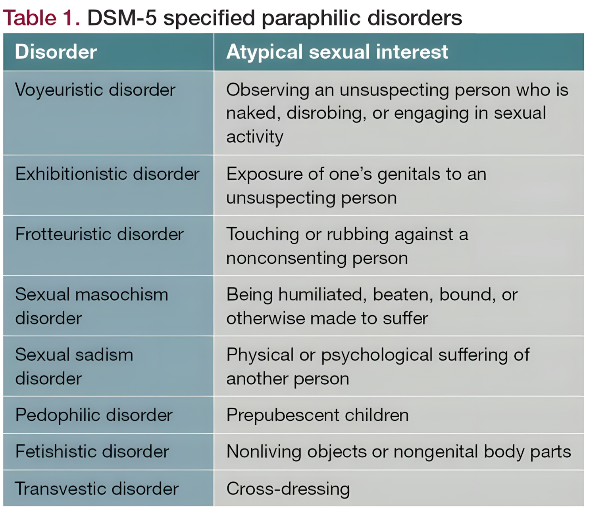
Who are people with paraphilic disorder? They are more common among people who struggle socially, especially men who face repeated sexual rejection, who feel inadequate, and who struggle to read social cues from others (Ahlers et al., 2011; First, 2014)ReferencesAhlers, C. J., Schaefer, G. A., Mundt, I. A., Roll, S., Englert, H., Willich, S. N., & Beier, K. M. (2011). How unusual are the contents of paraphilias? The Journal of Sexual Medicine, 8(5), 1362–1370.
First, M. B. (2014). DSM-5 and paraphilic disorders. Journal of the American Academy of Psychiatry and the Law, 42(2), 191–201.. Many people with these disorders misread a victim's shock or disgust as excitement, which fuels the behavior. This doesn't excuse dangerous and non-consensual behavior, but it does suggest certain treatments may be more effective (which will be discussed later in this chapter).
Exhibitionistic Disorder
An exhibitionistic disorderExhibitionistic DisorderArousal from exposing one's genitals to non-consenting, unsuspecting people.View in glossary → involves exposing one's genitals to non-consenting, unsuspecting people for sexual gratification. A common example is a man who exposes himself to a stranger and reads her shock or fear as arousal. Legally this is indecent exposure and can require sex-offender registration. Being targeted is not rare. In one study, about 40% of women and 12% of men reported having been victims of indecent exposure, and most described feeling violated, angry, and scared (Clark et al., 2016)ReferenceClark, S. K., Jeglic, E. L., Calkins, C., & Tatar, J. R. (2016). More than a nuisance: The prevalence and consequences of frotteurism and exhibitionism. Sexual Abuse, 28(1), 3–19.. A related pattern, scatologiaScatologiaAn auditory form of exhibitionistic disorder involving arousal from saying obscene things to a non-consenting person.View in glossary →, is arousal from saying obscene things to a non-consenting person, as in obscene phone calls. Caller ID has made scatologia less common than it once was.
Voyeuristic Disorder
A voyeuristic disorderVoyeuristic DisorderArousal from secretly watching non-consenting people undress or have sex.View in glossary → is arousal from secretly watching people who are undressing or having sex and who have not consented to being watched, commonly known as "peeping." Some researchers view the underlying interest as an extreme form of a more common, visually driven sexuality that is common, especially among men. Roughly half of men report some voyeuristic behavior during adolescence, indicating this may become a long-term paraphilia in those who don't outgrow the tendency (Thomas et al., 2021)ReferenceThomas, A. G., Stone, B., Bennett, P., Stewart-Williams, S., & Kennair, L. E. O. (2021). Sex differences in voyeuristic and exhibitionistic interests. Archives of Sexual Behavior, 50(5), 2151–2162.. The disorder involves the crucial absence of consent, and often secret observation and masturbation.

Frotteuristic Disorder
A frotteuristic disorderFrotteuristic DisorderArousal from touching or rubbing against a non-consenting person, usually in a crowd.View in glossary → is arousal from touching or rubbing against a non-consenting person, usually in a crowded place like a subway car, bar, or elevator where the offender can escape unnoticed. It is one of the most common forms of sexual assault. In one study, 44% of participants reported having been victimized by frotteurism or exhibitionism in their lifetime (Clark et al., 2016)ReferenceClark, S. K., Jeglic, E. L., Calkins, C., & Tatar, J. R. (2016). More than a nuisance: The prevalence and consequences of frotteurism and exhibitionism. Sexual Abuse, 28(1), 3–19.. A team that observed nightclubs recorded over 1,000 instances of unwanted groping and saw it during about 80% of their visits, yet offenders were ejected only about 0.3% of the time — meaning a person could grope others hundreds of times without consequence (Graham et al., 2014)ReferenceGraham, K., Bernards, S., Osgood, D. W., Abbey, A., Parks, M., Flynn, A., Dumas, T., & Wells, S. (2014). "Blurred lines?" Sexual aggression and barroom culture. Alcoholism: Clinical and Experimental Research, 38(5), 1416–1424..
A man repeatedly rubs against unsuspecting strangers on a crowded train for sexual gratification. This behavior is best classified as:
Pedophilic Disorder
Pedophilic disorderPedophilic DisorderRecurrent, intense sexual attraction to prepubescent children; the most serious paraphilia, and a crime when acted upon.View in glossary → involves recurrent, intense sexual attraction to prepubescent children. It is the most serious paraphilia, and acting on it is always a crime and always causes profound harm. It is useful to distinguish two overlapping groups. A person with pedophilia has the attraction, while a child molesterChild MolesterAn adult who has sexual contact with a child; overlaps only partly with pedophilia.View in glossary → is an adult who has sexual contact with a child. Not everyone in one group is in the other. Some people with the attraction never act on it, and some who abuse children are driven by factors other than sexual attraction, such as the desire to exert power (Finkelhor, 2010)ReferenceFinkelhor, D. (2010). Sexually victimized children. Simon and Schuster..
Researchers have found neurodevelopmental correlates, including differences in brain structure (Cantor et al., 2015; Schiffer et al., 2007)ReferencesCantor, J. M., Lafaille, S., Soh, D. W., Moayedi, M., Mikulis, D. J., & Girard, T. A. (2015). Diffusion tensor imaging of pedophilia. Archives of Sexual Behavior, 44(8), 2161–2172.
Schiffer, B., et al. (2007). Structural brain abnormalities in the frontostriatal system and cerebellum in pedophilia. Journal of Psychiatric Research, 41(9), 753–762., which may help explain the attraction without excusing any behavior.
Researchers have found significant brain differences in people who display pedophilic interests, with many of these pointing toward the condition being linked with a damaged brain. Men with pedophilic interests are more likely to report head injuries causing unconsciousness before age 13 (Blanchard et al., 2003)ReferenceBlanchard, R., Kuban, M. E., Klassen, P., Dickey, R., Christensen, B. K., Cantor, J. M., & Blak, T. (2003). Self-reported head injuries before and after age 13 in pedophilic and nonpedophilic men referred for clinical assessment. Archives of Sexual Behavior, 32(6), 573–581.. They're also more likely to display low IQ scores, with reduced gray and white matter in the brain (Cantor et al., 2004, 2008, 2015; Schiffer et al., 2007)ReferencesCantor, J. M., et al. (2004). Intelligence, memory, and handedness in pedophilia. Neuropsychology, 18(1), 3–14.
Cantor, J. M., et al. (2008). Cerebral white matter deficiencies in pedophilic men. Journal of Psychiatric Research, 42(3), 167–183.
Cantor, J. M., et al. (2015). Diffusion tensor imaging of pedophilia. Archives of Sexual Behavior, 44(8), 2161–2172.
Schiffer, B., et al. (2007). Structural brain abnormalities in the frontostriatal system and cerebellum in pedophilia. Journal of Psychiatric Research, 41(9), 753–762.. Interestingly, these brain abnormalities may not be directly tied with a sexual interest in children, as much as the tendency to act on it. A brain imaging study of pedophilic men with a criminal history vs. those without found that only those with a criminal history showed lower gray matter volume (Kärgel et al., 2017)ReferenceKärgel, C., et al. (2017). Evidence for superior neurobiological and behavioral inhibitory control abilities in non-offending as compared to offending pedophiles. Human Brain Mapping, 38(2), 1092–1104.. It may be that many men who have a sexual interest in children simply don't act on it, because they have enough self-control to realize it's not in their own best interest.
A correlation is not destiny, and brain abnormalities cannot excuse harmful behavior. While this research can help us understand what drives pedophilia and child sexual abuse, it doesn't let abusers off the hook. However, it does point toward potential models for spotting and treating people with pedophilic disorder. Some scientists have argued that pedophilia is something that should be treated like any impulse disorder (such as impulsive gambling). For such disorders, the goal isn't to extinguish the impulse (which may be impossible), but to help people not act on them (Beier et al., 2009)ReferenceBeier, K. M., Neutze, J., Mundt, I. A., Ahlers, C. J., Goecker, D., Konrad, A., & Schaefer, G. A. (2009). Encouraging self-identified pedophiles and hebephiles to seek professional help: First results of the Prevention Project Dunkelfeld (PPD). Child Abuse & Neglect, 33(8), 545–549.. As will be discussed in the next section, there have been promising studies around treating paraphilic disorders through simple skills training and impulse control techniques.
Which of the following best captures the difference between a person with pedophilia and a child molester?
14.6 Hypersexuality
One of the most common (and hotly debated) paraphilias is hypersexualityHypersexualityAn unusually high, hard-to-satisfy sex drive that causes distress and impairs daily life; often called "sex addiction."View in glossary →, an unusually high and unrelenting sex drive that causes real distress and impairment in daily life. It is often called "sex addiction," but that label is hotly contested. The word addiction is most often tied with unhealthy behaviors, such as drug use or gambling. Can people really be addicted to something as natural and generally beneficial as sex?
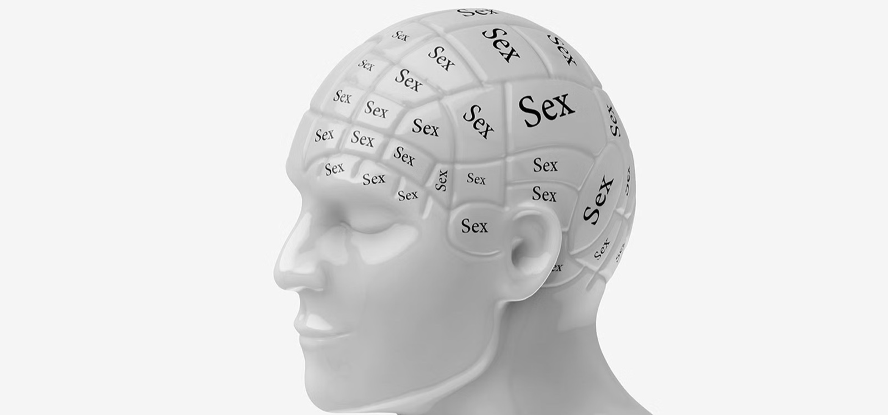
Can People Be Addicted to Sex?
While not officially diagnosed within the DSM, "sex addiction" is typically thought of as a preoccupation with sex and sexual rituals that lead to compulsive behavior. This is usually followed by feelings of regret and even despair, rather than satisfaction. The cycle repeats over-and-over again and intensifies each time it repeats (Carnes, 2001)ReferenceCarnes, P. (2001). Out of the shadows: Understanding sexual addiction (3rd ed.). Hazelden.. This shows all of the hallmarks of addiction, such as obsession, compulsive behaviors, and an inability to stop the cycle even when it seriously impairs a person's life.
Critics, however, point out important differences from drug addiction. There is no physical withdrawal when a person stops their sexual rituals. There can be psychological withdrawal symptoms, though, such as irritation, depression, anxiety, and sleep problems (Coleman et al., 2003)ReferenceColeman, E., Raymond, N., & McBean, A. (2003). Assessment and treatment of compulsive sexual behavior. Minnesota Medicine, 86(7), 42–47.. To avoid debates about whether it is a true "addiction," many experts now use the term compulsive sexual behaviorCompulsive Sexual BehaviorA preferred term for hypersexuality that emphasizes loss of control, intrusive urges, and resulting harm.View in glossary → (CSB), which emphasizes the loss of control, intrusive urges, and resulting harm to work, relationships, and personal health. The DSM-related literature has treated it largely as a problem of impulse control, which points patients toward medications and talk-therapy geared at helping people better control their behavior (Kafka, 2010)ReferenceKafka, M. P. (2010). Hypersexual disorder: A proposed diagnosis for DSM-V. Archives of Sexual Behavior, 39(2), 377–400..
What It Looks Like
Whatever we call it, the defining feature is loss of control. A person may spend hours a day seeking sex or sexual material (pornography, sex toys), feel unable to stop despite wanting to, and experience deep shame about their behavior. Estimates suggest around 5% of adults experience compulsive sexual behavior at some point in their lives, with the large majority being men (Coleman et al., 2003; Kürbitz & Briken, 2021)ReferencesColeman, E., Raymond, N., & McBean, A. (2003). Assessment and treatment of compulsive sexual behavior. Minnesota Medicine, 86(7), 42–47.
Kürbitz, L. I., & Briken, P. (2021). Is compulsive sexual behavior different in women compared to men? Journal of Clinical Medicine, 10(15), 3205.. The most common problems include compulsive masturbation, heavy and compulsive pornography use, and engaging in risky sexual behavior (Kafka, 2010; Reid et al., 2012)ReferencesKafka, M. P. (2010). Hypersexual disorder: A proposed diagnosis for DSM-V. Archives of Sexual Behavior, 39(2), 377–400.
Reid, R. C., et al. (2012). Report of findings in a DSM-5 field trial for hypersexual disorder. The Journal of Sexual Medicine, 9(11), 2868–2877..
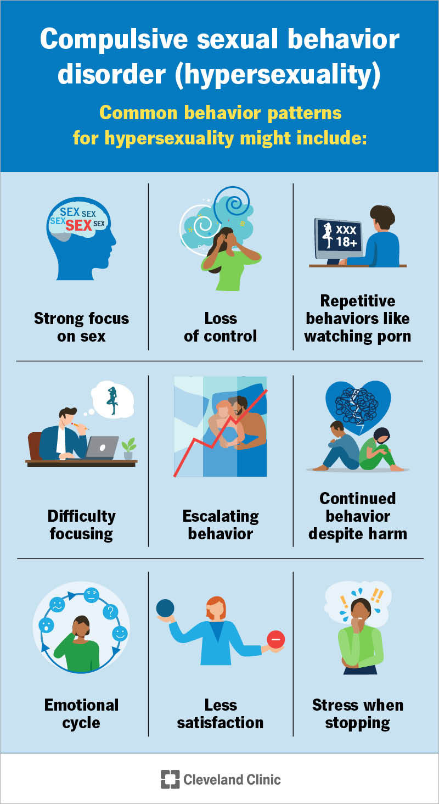
It is important not to over-diagnose. A person who masturbates daily in private or who regularly enjoys pornography is almost certainly within the normal range of sexual desire and behavior. What signals a problem is the compulsiveness — the constant preoccupation, the inability to stop, and the willingness to risk serious harm to keep going.
What May Cause It
Causes are not fully understood, and several factors likely combine to create CSB. People who exhibit CSB typically display impulsive behavior in other areas of their life, such as gambling and drinking to excess. A meta-analysis found that among studies that tested for both CSB and general impulsivity, nearly all of them (97%) found a positive correlation between the two (Gaudet et al., 2025)ReferenceGaudet, É., Ngamaleu Teumeni, F., Popova, N., Coulombe, S., Demetrovics, Z., & Bőthe, B. (2025). Compulsive sexual behavior and problematic pornography use on the impulsivity–compulsivity axis: A systematic review. Current Addiction Reports, 12, Article 41.. It may be that CSB is simply another variant of other impulse control issues that some people display in many areas of their lives. Although, some studies have found that general impulsivity perhaps only accounts for 20% of the variance in hypersexuality (Bőthe et al., 2019)ReferenceBőthe, B., Tóth-Király, I., Potenza, M. N., Griffiths, M. D., Orosz, G., & Demetrovics, Z. (2019). Revisiting the role of impulsivity and compulsivity in problematic sexual behaviors. The Journal of Sex Research, 56(2), 166–179..
For many with CSB, sex serves as a way to escape negative feelings, much like alcohol for people who struggle with drinking (Bancroft & Vukadinovic, 2004)ReferenceBancroft, J., & Vukadinovic, Z. (2004). Sexual addiction, sexual compulsivity, sexual impulsivity, or what? Toward a theoretical model. The Journal of Sex Research, 41(3), 225–234.. Sex feels good and can offer a temporary reprieve from depression, anxiety, or other mood disorders. Research has also found that hypersexuality is frequently linked with experiencing childhood abuse, particularly sexual abuse (Kor et al., 2013; Reid et al., 2012)ReferencesKor, A., Fogel, Y., Reid, R. C., & Potenza, M. N. (2013). Should hypersexual disorder be classified as an addiction? Sexual Addiction & Compulsivity, 20(1–2), 27–47.
Reid, R. C., et al. (2012). Report of findings in a DSM-5 field trial for hypersexual disorder. The Journal of Sexual Medicine, 9(11), 2868–2877.. In a study of 222 men in treatment for CSB, nearly 60% had been sexually abused as children (Reis et al., 2023)ReferenceReis, S. C., Park, K. E., Dionne, M. M., Kim, H. S., & Scanavino, M. D. T. (2023). Symptoms of depression (not anxiety) mediate the relationship between childhood sexual abuse and compulsive sexual behaviors in men. Brazilian Journal of Psychiatry, 45(1), 38–45.. While sexual trauma is certainly a major risk factor for hypersexuality, most survivors do not develop CSB, so it's likely a combination of all of the above factors that lead to this disorder.
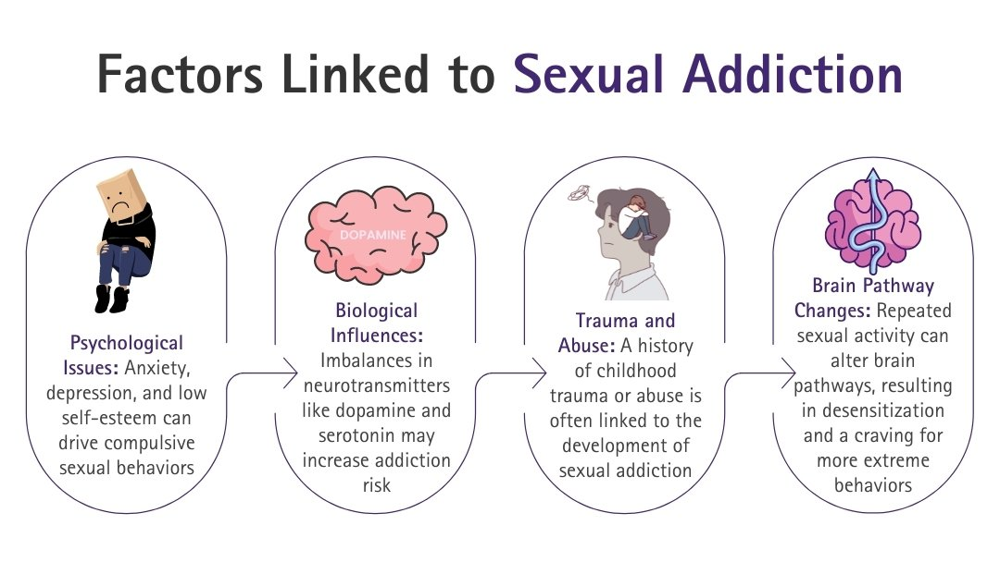
This paints a very different picture of sex addiction than how it's often portrayed in popular media. It's not a hot, rich man who enjoys going to sex parties and cheating on his spouse. It's not the pro athlete who spends too much time at strip clubs. It's most often men who are severely depressed, lonely, and ashamed of their sexual behavior (Bőthe et al., 2021)ReferenceBőthe, B., Vaillancourt-Morel, M.-P., & Bergeron, S. (2021). Hypersexuality in mixed-sex couples: A dyadic longitudinal study. Archives of Sexual Behavior, 50, 2139–2150.. Like any addiction, people with CSB should be treated with compassion and offered treatments to help them.
A therapist is deciding whether a client's frequent masturbation is a sign of compulsive sexual behavior. Which factor is most important to that judgment?
14.7 Treating Paraphilic Disorders
Treatment is often difficult for people with paraphilic disorders. For one, most people with these disorders do not seek help, often due to shame or a desire to keep fulfilling their sexual fantasies. Most often, treatment is court-ordered, which is not a recipe for success. Talk therapy, in particular, requires self-motivation to be successful. An old joke sums it up: How many therapists does it take to change a lightbulb? … Only one, but the lightbulb has to want to change.
This is likely the reason why traditional talk therapy has a relatively low likelihood of success. Studies generally find that sexual offenders who participate in therapy are 15–30% less likely to reoffend in the next 6 years (Aos et al., 2006; Olver & Stockdale, 2025; Páv et al., 2023)ReferencesAos, S., Miller, M., & Drake, E. (2006). Evidence-based public policy options to reduce future prison construction, criminal justice costs, and crime rates. Washington State Institute for Public Policy.
Olver, M. E., & Stockdale, K. C. (2025). Sexual offense treatment programming and recidivism reduction: A meta-meta-analysis. Current Sexual Health Reports, 17, Article 13.
Páv, M., Sebalo, I., Brichcín, S., & Perkins, D. (2023). Outcome evaluation of a treatment program for men with paraphilic disorders convicted of sexual offenses. International Journal of Offender Therapy and Comparative Criminology.. It's not that therapy is ineffective, it's that clients usually do not want to change (or at least aren't willing to put in the effort needed for long-term change).
Therapy tends to be more successful if it's targeting a specific behavior, such as stopping compulsive porn use. Support groups and generic "addiction" treatment programs tend to be the least effective. This suggests that for therapy to work, it needs to be aimed at specific outcomes, such as reducing impulsive behavior or treating depression (Holper et al., 2024)ReferenceHolper, L., Mokros, A., & Habermeyer, E. (2024). Moderators of sexual recidivism as indicator of treatment effectiveness in persons with sexual offense histories: An updated meta-analysis. Sexual Abuse, 36(3), 255–291..
Beyond talk therapy, many people with paraphilias find success with drug treatments or castration (removing sex hormones). The best outcomes are for people who combine treatments, particularly combining talk therapy with medication (Lösel & Schmucker, 2005; Thibaut et al., 2020)ReferencesLösel, F., & Schmucker, M. (2005). The effectiveness of treatment for sexual offenders: A comprehensive meta-analysis. Journal of Experimental Criminology, 1, 117–146.
Thibaut, F., et al. (2020). The World Federation of Societies of Biological Psychiatry guidelines for the pharmacological treatment of paraphilic disorders. The World Journal of Biological Psychiatry, 21(6), 412–490.. Below, I'll outline these different approaches.
Talk Therapy
Traditional behavior therapies try to undo a learned response. In aversion therapyAversion TherapyA behavior therapy that pairs a harmful sexual stimulus with an unpleasant one to weaken the link between the target and arousal.View in glossary →, a harmful stimulus is paired with an unpleasant one — an offensive smell or physical pain — to weaken the link between the target and arousal. This is meant to train the body to avoid the harmful stimulus. In practice, this may look like a client administering a mildly painful stimulus, such as snapping a rubber band against their wrist, whenever they start having harmful fantasies.
Behavioral therapy can also be used to encourage new behaviors. One technique is masturbatory reconditioningMasturbatory ReconditioningA behavior therapy in which a person gradually shifts arousal from a harmful target to an acceptable one during masturbation; also called orgasmic reconditioning.View in glossary → (also called orgasmic reconditioning), in which a person masturbates while engaging with their paraphilic fantasy, but, right before orgasm, they switch focus to a more acceptable fantasy. This is meant to retrain sexual arousal toward healthy sexual fantasies. Over time, they intentionally start the acceptable fantasy at earlier stages of arousal until, eventually, it completely replaces the harmful fantasies. This technique depends heavily on motivation and self-awareness, given that the "work" being done is completely internal (inside their own head).
Cognitive therapyCognitive TherapyA treatment that targets and corrects the distorted thinking supporting harmful behavior, and works to build empathy for victims.View in glossary → targets the distorted thinking that supports harmful behavior. For example, an exhibitionist may falsely believe that his targets are aroused and secretly enjoy seeing the exhibitionist's naked body. The therapist may work with this client to appreciate that their behavior is causing real fear and harm in others. This technique works to correct false beliefs that keep a behavior going, as well as to build genuine empathy for victims. It's often paired with relapse prevention therapyRelapse Prevention TherapyA cognitive approach that helps a person identify triggers and rehearse healthier responses to avoid repeating harmful behavior.View in glossary →, which helps a person identify the triggers — stress, isolation, sadness — that set off the behavior, and rehearse healthier responses in the face of such triggers. Instead of turning to paraphilic behaviors during times of stress, a client may learn to engage in mindfulness or reach out to close friends and family.
Comprehensive cognitive-behavioral programs typically combine several of these elements: education about the condition, impulse-control and mindfulness practice, problem-solving skills, cognitive restructuring, and relapse prevention. Many programs also add skills trainingSkills TrainingA treatment component that teaches social and relationship skills to people who turn to harmful outlets because they cannot form ordinary relationships.View in glossary →, based on the idea that some people turn to harmful outlets because they struggle to develop intimate relationships. As mentioned earlier, many people with paraphilias display poor social skills and may need extra help in learning how to hold a conversation, build intimacy slowly and appropriately, and respect boundaries (Cantor et al., 2005)ReferenceCantor, J. M., Blanchard, R., Robichaud, L. K., & Christensen, B. K. (2005). Quantitative reanalysis of aggregate data on IQ in sexual offenders. Psychological Bulletin, 131(4), 555–568..
Drug Treatments
Psychological treatment alone is often not enough to prevent relapse. Medication can help people tame their urges enough to make better decisions and apply what they're learning in therapy (Baez-Sierra et al., 2016; Fedoroff & Marshall, 2010)ReferencesBaez-Sierra, D., Balgobin, C., & Wise, T. N. (2016). Treatment of paraphilic disorders. In R. Balon (Ed.), Practical guide to paraphilia and paraphilic disorders (pp. 43–62). Springer.
Fedoroff, J. P., & Marshall, W. L. (2010). Paraphilias. In D. McKay, J. S. Abramowitz, & S. Taylor (Eds.), Cognitive-behavioral therapy for refractory cases (pp. 369–384). American Psychological Association.. One common class of drugs used to treat paraphilias are antidepressants, particularly selective serotonin reuptake inhibitors (SSRIsSSRIsA class of antidepressants whose side effect of lowering sex drive can help treat paraphilic disorders.View in glossary →). These drugs not only help to alleviate mood disorders (depression, anxiety, OCD) that may underlie paraphilias, but they also have the side effect of lowering sex drive. In the case of paraphilic patients, this is a win-win.
Another option is a hormonal medication such as Depo-Provera, which sharply lowers testosterone and thus sex drive — an approach sometimes called chemical castrationChemical CastrationThe use of hormonal medication such as Depo-Provera to sharply lower testosterone and sex drive as a treatment for paraphilic disorders.View in glossary →. When patients take these medications voluntarily, studies report reductions in unwanted sexual behavior on the order of 80–90% (Landgren et al., 2020; Khan et al., 2015; Thibaut et al., 2010)ReferencesLandgren, V., Malki, K., Bottai, M., Arver, S., & Rahm, C. (2020). Effect of gonadotropin-releasing hormone antagonist on risk of committing child sexual abuse in men with pedophilic disorder. JAMA Psychiatry, 77(9), 897–905.
Khan, O., et al. (2015). Pharmacological interventions for those who have sexually offended or are at risk of offending. Cochrane Database of Systematic Reviews, 2015(2), CD007989.
Thibaut, F., et al. (2010). The WFSBP guidelines for the biological treatment of paraphilias. The World Journal of Biological Psychiatry, 11(4), 604–655.. The catch is that side effects like mood swings and weight gain make it hard to keep patients on the medication.
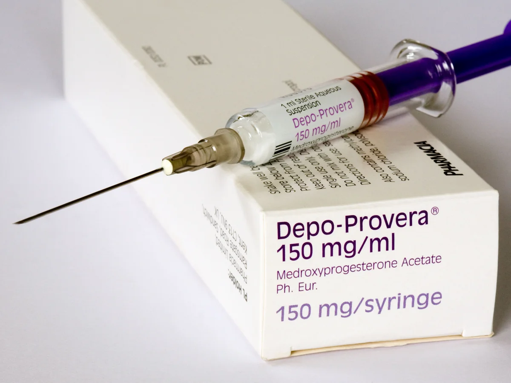
Hormonal "chemical castration" is not always a personal choice. In a few U.S. states, including California and Louisiana, it is required by law for certain serious or repeat sex offenders as a condition of release. Critics question how "voluntary" such treatment really is when the alternative is staying in prison.
Surgical Castration
Surgical castrationSurgical CastrationRemoval of the testicles to end testosterone production; used only as a last resort for serious offenders.View in glossary → — removing the testicles to end testosterone production — is used only as a last resort. It is sometimes offered to serious offenders, such as sexual predators, in exchange for release from prison. Many clinicians oppose it on ethical grounds, in part because "opting in" is hardly a free choice when the alternative is prison.
Studies find castration does significantly lower risk of re-offending, but it doesn't treat the underlying reasons for paraphilic disorders (Thibaut et al., 2020; Wille & Beier, 1989)ReferencesThibaut, F., et al. (2020). The World Federation of Societies of Biological Psychiatry guidelines for the pharmacological treatment of paraphilic disorders. The World Journal of Biological Psychiatry, 21(6), 412–490.
Wille, R., & Beier, K. M. (1989). Castration in Germany. Annals of Sex Research, 2, 103–133.. And even men who are castrated can still have sex and may reoffend because their sexual fantasies are driven by more than simply their natural sex drive (Weinberger et al., 2005; Wille & Beier, 1989)ReferencesWeinberger, L. E., Sreenivasan, S., & Garrick, T. (2005). The impact of surgical castration on sexual recidivism risk among sexually violent predatory offenders. Journal of the American Academy of Psychiatry and the Law, 33(1), 16–36.
Wille, R., & Beier, K. M. (1989). Castration in Germany. Annals of Sex Research, 2, 103–133.. Modern medications used to treat paraphilia are just as effective at reducing sex drive, without being so permanent.
A clinician wants to give a motivated client the treatment approach with the strongest evidence for reducing paraphilic behavior. Which should she prioritize?
Study Guide
After reading this chapter, you should be able to answer each of the questions below. Use your own words where possible, and support your answers with examples or evidence from the text.
14.1 Kinks vs. "Abnormal" Sexual Behavior
- Compare the statistical, sociological, and psychological approaches to defining "abnormal" sexual behavior, and give one weakness of each.
- Explain the difference between a paraphilia and a paraphilic disorder, using a concrete example of your own.
- What are the "four Ds," and how do they shift the central question from whether a behavior is unusual to whether it is harmful?
14.2 Common Kinks and Fetishes
- Describe the somatosensory "cross-wiring" hypothesis for foot fetishes, and explain why it is called a hypothesis rather than a settled fact.
- Explain why breath play can be dangerous, and why auto-asphyxiophilia is considered the riskiest form.
- Draw the clearest distinction you can between transvestism and being transgender. Why does the chapter insist on keeping them separate?
14.3 BDSM and Erotic Power Play
- Define the roles of top and bottom, and of sadist and masochist. How does the idea of a continuum apply to BDSM?
- Summarize the evidence on the mental health of BDSM practitioners. How does it challenge older views?
- Why is consent described as "the whole game" in BDSM? Explain the role of a safeword and why "no" may not function as one.
14.4 Where Do Kinks Come From?
- Using classical conditioning, explain how a neutral object might become a fetish. How do the boots and piggy-bank studies illustrate this?
- What is generalization, and how did it appear in the fetish-conditioning research?
- Many people assume BDSM interests are caused by past abuse or trauma. What does the research reviewed in the chapter say about that belief, and what kind of evidence supports the conclusion?
14.5 Paraphilic Disorders
- What single feature moves exhibitionism, voyeurism, and frotteurism from healthy kinks into paraphilic disorders?
- Distinguish a person with pedophilia from a child molester. What have brain and impulse-control studies suggested about why some people act on the attraction while others do not?
- Explain the "substitution hypothesis." How might legal access to sexual outlets online affect rates of illegal sexual behavior, and what evidence is offered for this?
14.6 Hypersexuality
- Why do many experts prefer the term "compulsive sexual behavior" over "sex addiction"?
- What distinguishes normal frequent sexual behavior from compulsive sexual behavior?
14.7 Treating Paraphilic Disorders
- Compare aversion therapy and masturbatory reconditioning. Why might the second leave a patient feeling less ashamed?
- Summarize what is known about how well treatment works. Which approach has the strongest evidence, and what produces the best outcomes?
Key Terms
- ABDL
- The acronym for adult-baby diaper lovers; adults who engage in infantilism role-play involving diapers.
- Adult Baby
- An adult who takes on an infant-like role as part of infantilism.
- Asphyxiophilia
- The practice of restricting oxygen for sexual pleasure; also called breath play.
- Auto-asphyxiophilia
- Restricting one's own oxygen while masturbating alone, the most dangerous form of breath play because no one is present to intervene.
- Autogynephilia
- A debated concept describing a man's sexual arousal at the thought of himself as a woman.
- Aversion Therapy
- A behavior therapy that pairs a harmful sexual stimulus with an unpleasant one to weaken the link between the target and arousal.
- BDSM
- An umbrella term for bondage and discipline, dominance and submission, and sadism and masochism.
- Bondage
- Restraining a partner as part of BDSM play.
- Bottom
- The submissive partner in a BDSM scene.
- Chemical Castration
- The use of hormonal medication such as Depo-Provera to sharply lower testosterone and sex drive as a treatment for paraphilic disorders.
- Child Molester
- An adult who has sexual contact with a child; overlaps only partly with pedophilia.
- Classical Conditioning
- A form of learning in which a neutral cue, paired repeatedly with something that already produces a response, comes to produce that response on its own.
- Cognitive Therapy
- A treatment that targets and corrects the distorted thinking supporting harmful behavior, and works to build empathy for victims.
- Compulsive Sexual Behavior
- A preferred term for hypersexuality that emphasizes loss of control, intrusive urges, and resulting harm.
- Consent
- Freely given, informed agreement to a sexual activity; in BDSM, the core safeguard that separates play from abuse.
- Continuum
- The idea that a sexual interest can be held anywhere from very mild to very intense.
- Coprophilia
- A fetish involving defecating on a partner; it carries a higher health risk than urophilia because feces can transmit bacteria, viruses, and parasites.
- Exhibitionistic Disorder
- Arousal from exposing one's genitals to non-consenting, unsuspecting people.
- Fetish
- A sexual attraction to a specific object or body part, often something worn on or close to the body.
- Flow
- An altered state, often experienced by the top in BDSM, marked by focused, absorbed attention and loss of self-consciousness.
- Frotteuristic Disorder
- Arousal from touching or rubbing against a non-consenting person, usually in a crowd.
- Furries
- People who enjoy animal characters with human traits; the community is mostly social and artistic, though some engage with it sexually.
- Generalization
- When a learned response spreads from the original cue to similar cues.
- Hentai
- A Japanese term for animated or drawn pornography.
- Hypersexuality
- An unusually high, hard-to-satisfy sex drive that causes distress and impairs daily life; often called "sex addiction."
- Hypoxic Euphoria
- The brief, floaty "high" some people feel when oxygen is reduced.
- Infantilism
- A fetish built around fantasies of returning to infancy.
- Kink
- Any sexual practice considered outside the conventional; the term is subjective.
- Masochist
- A person who enjoys receiving pain or control.
- Masturbatory Reconditioning
- A behavior therapy in which a person gradually shifts arousal from a harmful target to an acceptable one during masturbation; also called orgasmic reconditioning.
- Mechanophilia
- Sexual attraction to machines, such as cars or aircraft.
- Objectophilia
- A strong sexual and emotional attachment to an inanimate object; also called object sexuality.
- Paraphilia
- An intense, persistent sexual interest outside the usual focus on consenting adult partners; an atypical interest, not a disorder by itself.
- Paraphilic Disorder
- A paraphilia that causes the person serious distress or impairment, or that involves harm to non-consenting others.
- Partialism
- An intense sexual focus on a specific body part.
- Pedophilic Disorder
- Recurrent, intense sexual attraction to prepubescent children; the most serious paraphilia, and a crime when acted upon.
- Relapse Prevention Therapy
- A cognitive approach that helps a person identify triggers and rehearse healthier responses to avoid repeating harmful behavior.
- Sadist
- A person who enjoys giving pain or control.
- Sadomasochism
- The giving and receiving of physical or psychological pain and control for pleasure.
- Safeword
- A prearranged word or gesture that immediately stops a BDSM scene.
- Scatologia
- An auditory form of exhibitionistic disorder involving arousal from saying obscene things to a non-consenting person.
- Skills Training
- A treatment component that teaches social and relationship skills to people who turn to harmful outlets because they cannot form ordinary relationships.
- Somatosensory Cortex
- The strip of brain that processes touch, organized like a map of the body.
- SSRIs
- A class of antidepressants whose side effect of lowering sex drive can help treat paraphilic disorders.
- Surgical Castration
- Removal of the testicles to end testosterone production; used only as a last resort for serious offenders.
- Top
- The dominant partner in a BDSM scene.
- Transient Hypofrontality
- An altered state, often experienced by the bottom in BDSM, in which front-of-brain activity quiets and pain fades into a floating, peaceful feeling.
- Transvestism
- Sexual arousal from wearing clothing associated with the other sex; also called transvestic fetishism, and distinct from being transgender.
- Urophilia
- The practice of urinating on a partner or being urinated on; also called watersports or a golden shower.
- Voyeuristic Disorder
- Arousal from secretly watching non-consenting people undress or have sex.
References
- Ahlers, C. J., Schaefer, G. A., Mundt, I. A., Roll, S., Englert, H., Willich, S. N., & Beier, K. M. (2011). How unusual are the contents of paraphilias? Paraphilia-associated sexual arousal patterns in a community-based sample of men. The Journal of Sexual Medicine, 8(5), 1362–1370. https://doi.org/10.1111/j.1743-6109.2009.01597.x
- Akins, C. K. (2004). The role of Pavlovian conditioning in sexual behavior: A comparative analysis of human and nonhuman animals. International Journal of Comparative Psychology, 17(2–3), 241–262.
- Alanko, K., Salo, B., Mokros, A., & Santtila, P. (2013). Evidence for heritability of adult men's sexual interest in youth under age 16 from a population-based extended twin design. The Journal of Sexual Medicine, 10(4), 1090–1099. https://doi.org/10.1111/jsm.12067
- Ambler, J. K., Lee, E. M., Klement, K. R., Loewald, T., Comber, E. M., Hanson, S. A., Cutler, B., Cutler, N., & Sagarin, B. J. (2017). Consensual BDSM facilitates role-specific altered states of consciousness: A preliminary study. Psychology of Consciousness: Theory, Research, and Practice, 4(1), 75–91. https://doi.org/10.1037/cns0000097
- American Psychiatric Association. (2013). Paraphilic disorders. In Diagnostic and statistical manual of mental disorders (5th ed., pp. 685–705). American Psychiatric Publishing.
- Aos, S., Miller, M., & Drake, E. (2006). Evidence-based public policy options to reduce future prison construction, criminal justice costs, and crime rates. Washington State Institute for Public Policy.
- Arnone, J. M., Conti, R. P., & Preckajlo, J. H. (2024). Coprophilia and coprophagia: A literature review. Journal of the American Psychiatric Nurses Association, 30(1), 8–16. https://doi.org/10.1177/10783903231214265
- Baez-Sierra, D., Balgobin, C., & Wise, T. N. (2016). Treatment of paraphilic disorders. In R. Balon (Ed.), Practical guide to paraphilia and paraphilic disorders (pp. 43–62). Springer.
- Bancroft, J., & Vukadinovic, Z. (2004). Sexual addiction, sexual compulsivity, sexual impulsivity, or what? Toward a theoretical model. The Journal of Sex Research, 41(3), 225–234. https://doi.org/10.1080/00224490409552230
- Baumeister, R. F. (1988). Masochism as escape from self. The Journal of Sex Research, 25(1), 28–59. https://doi.org/10.1080/00224498809551444
- Beech, H. R., Watts, F., & Desmond Poole, A. (1971). Classical conditioning of a sexual deviation: A preliminary note. Behavior Therapy, 2(3), 400–402. https://doi.org/10.1016/S0005-7894(71)80076-X
- Beier, K. M., Neutze, J., Mundt, I. A., Ahlers, C. J., Goecker, D., Konrad, A., & Schaefer, G. A. (2009). Encouraging self-identified pedophiles and hebephiles to seek professional help: First results of the Prevention Project Dunkelfeld (PPD). Child Abuse & Neglect, 33(8), 545–549. https://doi.org/10.1016/j.chiabu.2009.04.002
- Blanchard, R., Kuban, M. E., Klassen, P., Dickey, R., Christensen, B. K., Cantor, J. M., & Blak, T. (2003). Self-reported head injuries before and after age 13 in pedophilic and nonpedophilic men referred for clinical assessment. Archives of Sexual Behavior, 32(6), 573–581. https://doi.org/10.1023/A:1026093612434
- Bőthe, B., Tóth-Király, I., Potenza, M. N., Griffiths, M. D., Orosz, G., & Demetrovics, Z. (2019). Revisiting the role of impulsivity and compulsivity in problematic sexual behaviors. The Journal of Sex Research, 56(2), 166–179. https://doi.org/10.1080/00224499.2018.1480744
- Bőthe, B., Vaillancourt-Morel, M.-P., & Bergeron, S. (2021). Hypersexuality in mixed-sex couples: A dyadic longitudinal study. Archives of Sexual Behavior, 50, 2139–2150. https://doi.org/10.1007/s10508-021-01959-0
- Brown, A., Barker, E. D., & Rahman, Q. (2020). A systematic scoping review of the prevalence, etiological, psychological, and interpersonal factors associated with BDSM. The Journal of Sex Research, 57(6), 781–811. https://doi.org/10.1080/00224499.2019.1665619
- Browning, B. (2017). Oscar De La Hoya admits to crossdressing photos. LGBTQ Nation. https://www.lgbtqnation.com/2017/09/oscar-de-la-hoya-finally-admits-crossdressing-photos/
- Cantor, J. M., Blanchard, R., Christensen, B. K., Dickey, R., Klassen, P. E., Beckstead, A. L., Blak, T., & Kuban, M. E. (2004). Intelligence, memory, and handedness in pedophilia. Neuropsychology, 18(1), 3–14. https://doi.org/10.1037/0894-4105.18.1.3
- Cantor, J. M., Blanchard, R., Robichaud, L. K., & Christensen, B. K. (2005). Quantitative reanalysis of aggregate data on IQ in sexual offenders. Psychological Bulletin, 131(4), 555–568. https://doi.org/10.1037/0033-2909.131.4.555
- Cantor, J. M., Kabani, N., Christensen, B. K., Zipursky, R. B., Barbaree, H. E., Dickey, R., Klassen, P. E., Mikulis, D. J., Kuban, M. E., Blak, T., Richards, B. A., Hanratty, M. K., & Blanchard, R. (2008). Cerebral white matter deficiencies in pedophilic men. Journal of Psychiatric Research, 42(3), 167–183. https://doi.org/10.1016/j.jpsychires.2007.10.013
- Cantor, J. M., Lafaille, S., Soh, D. W., Moayedi, M., Mikulis, D. J., & Girard, T. A. (2015). Diffusion tensor imaging of pedophilia. Archives of Sexual Behavior, 44(8), 2161–2172. https://doi.org/10.1007/s10508-015-0629-7
- Carnes, P. (2001). Out of the shadows: Understanding sexual addiction (3rd ed.). Hazelden.
- Cassar, J. (2016, August 27). The most misunderstood sexuality explained. news.com.au.
- Chater, A. M. (2021). Does intentional asphyxiation by strangulation have addictive properties? Addiction, 116(4), 718–724. https://doi.org/10.1111/add.15247
- Clark, S. K., Jeglic, E. L., Calkins, C., & Tatar, J. R. (2016). More than a nuisance: The prevalence and consequences of frotteurism and exhibitionism. Sexual Abuse, 28(1), 3–19. https://doi.org/10.1177/1079063214525643
- Coleman, E., Raymond, N., & McBean, A. (2003). Assessment and treatment of compulsive sexual behavior. Minnesota Medicine, 86(7), 42–47.
- Connolly, P. H. (2006). Psychological functioning of bondage/domination/sado-masochism (BDSM) practitioners. Journal of Psychology & Human Sexuality, 18(1), 79–120. https://doi.org/10.1300/J056v18n01_05
- Diamond, M., Jozifkova, E., & Weiss, P. (2011). Pornography and sex crimes in the Czech Republic. Archives of Sexual Behavior, 40(5), 1037–1043. https://doi.org/10.1007/s10508-010-9696-y
- Docter, R. F., & Prince, V. (1997). Transvestism: A survey of 1032 cross-dressers. Archives of Sexual Behavior, 26(6), 589–605. https://doi.org/10.1023/A:1024572209266
- Dunkley, C. R., & Brotto, L. A. (2020). The role of consent in the context of BDSM. Sexual Abuse, 32(6), 657–678. https://doi.org/10.1177/1079063219842847
- Fedoroff, J. P., & Marshall, W. L. (2010). Paraphilias. In D. McKay, J. S. Abramowitz, & S. Taylor (Eds.), Cognitive-behavioral therapy for refractory cases: Turning failure into success (pp. 369–384). American Psychological Association.
- Finkelhor, D. (2010). Sexually victimized children. Simon and Schuster.
- First, M. B. (2014). DSM-5 and paraphilic disorders. Journal of the American Academy of Psychiatry and the Law, 42(2), 191–201.
- Fortune, E. E., & Goodie, A. S. (2010). The relationship between pathological gambling and sensation seeking: The role of subscale scores. Journal of Gambling Studies, 26(3), 331–346. https://doi.org/10.1007/s10899-009-9162-8
- Gaudet, É., Ngamaleu Teumeni, F., Popova, N., Coulombe, S., Demetrovics, Z., & Bőthe, B. (2025). Compulsive sexual behavior and problematic pornography use on the impulsivity–compulsivity axis: A systematic review. Current Addiction Reports, 12, Article 41. https://doi.org/10.1007/s40429-025-00637-8
- Graham, K., Bernards, S., Osgood, D. W., Abbey, A., Parks, M., Flynn, A., Dumas, T., & Wells, S. (2014). "Blurred lines?" Sexual aggression and barroom culture. Alcoholism: Clinical and Experimental Research, 38(5), 1416–1424. https://doi.org/10.1111/acer.12356
- Grimes, A. (2021). The science of fetishes. Osmosis Magazine, 2019(1). https://scholarship.richmond.edu/osmosis/vol2019/iss1/5
- Herbenick, D., Fu, T., Valdivia, D. S., Patterson, C., Gonzalez, Y. R., Guerra-Reyes, L., Eastman-Mueller, H., Beckmeyer, J., & Rosenberg, M. (2021). What is rough sex, who does it, and who likes it? Findings from a probability sample of U.S. undergraduate students. Archives of Sexual Behavior, 50(3), 1183–1195. https://doi.org/10.1007/s10508-021-01917-w
- Hittner, J. B., & Swickert, R. (2006). Sensation seeking and alcohol use: A meta-analytic review. Addictive Behaviors, 31(8), 1383–1401. https://doi.org/10.1016/j.addbeh.2005.11.004
- Hoffmann, H., Janssen, E., & Turner, S. L. (2004). Classical conditioning of sexual arousal in women and men: Effects of varying awareness and biological relevance of the conditioned stimulus. Archives of Sexual Behavior, 33(1), 43–53. https://doi.org/10.1023/B:ASEB.0000007461.59019.d3
- Holper, L., Mokros, A., & Habermeyer, E. (2024). Moderators of sexual recidivism as indicator of treatment effectiveness in persons with sexual offense histories: An updated meta-analysis. Sexual Abuse, 36(3), 255–291. https://doi.org/10.1177/10790632231159071
- Holvoet, L., Huys, W., Coppens, V., Seeuws, J., Goethals, K., & Morrens, M. (2017). Fifty shades of Belgian gray: The prevalence of BDSM-related fantasies and activities in the general population. The Journal of Sexual Medicine, 14(9), 1152–1159. https://doi.org/10.1016/j.jsxm.2017.07.003
- Hsu, K. J., & Bailey, J. M. (2019). The "furry" phenomenon: Characterizing sexual orientation, sexual motivation, and erotic target identity inversions in male furries. Archives of Sexual Behavior, 48(5), 1349–1369. https://doi.org/10.1007/s10508-018-1303-7
- Jankowiak, W., Garcia, J. R., & Volsche, S. (2016). The half of the world that doesn't make out. Sapiens. https://www.sapiens.org/culture/is-romantic-kissing-a-human-universal/
- Jefferson, S. (2018). Psychological and demographic differences of BDSM practitioners [Honors thesis, Bridgewater State University]. Virtual Commons.
- Joyal, C. C., & Carpentier, J. (2017). The prevalence of paraphilic interests and behaviors in the general population: A provincial survey. The Journal of Sex Research, 54(2), 161–171. https://doi.org/10.1080/00224499.2016.1139034
- Kabiry, D. M. (2020). Objectum sexuality or objectophilia. International Journal of Advanced Studies in Sexology, 2(1). https://doi.org/10.46388/ijass.2020.13.14
- Kafka, M. P. (2010). Hypersexual disorder: A proposed diagnosis for DSM-V. Archives of Sexual Behavior, 39(2), 377–400. https://doi.org/10.1007/s10508-009-9574-7
- Kärgel, C., Massau, C., Weiß, S., Walter, M., Borchardt, V., Krueger, T. H. C., Tenbergen, G., Kneer, J., Wittfoth, M., Pohl, A., Gerwinn, H., Ponseti, J., Amelung, T., Beier, K. M., Mohnke, S., Walter, H., & Schiffer, B. (2017). Evidence for superior neurobiological and behavioral inhibitory control abilities in non-offending as compared to offending pedophiles. Human Brain Mapping, 38(2), 1092–1104. https://doi.org/10.1002/hbm.23443
- Kendall, T. D. (2007, January 19–20). Pornography, rape, and the internet [Paper presentation]. Fourth Bi-Annual Conference on the Economics of the Software and Internet Industries, Toulouse, France.
- Khan, O., Ferriter, M., Huband, N., Powney, M. J., Dennis, J. A., & Duggan, C. (2015). Pharmacological interventions for those who have sexually offended or are at risk of offending. Cochrane Database of Systematic Reviews, 2015(2), CD007989. https://doi.org/10.1002/14651858.CD007989.pub2
- Klinar, P., Burnik, S., & Kajtna, T. (2017). Personality and sensation seeking in high-risk sports. Acta Gymnica, 47(1), 41–48. https://doi.org/10.5507/ag.2017.005
- Koopmans, J. R., Boomsma, D. I., Heath, A. C., & van Doornen, L. J. P. (1995). A multivariate genetic analysis of sensation seeking. Behavior Genetics, 25(4), 349–356. https://doi.org/10.1007/BF02197284
- Kor, A., Fogel, Y., Reid, R. C., & Potenza, M. N. (2013). Should hypersexual disorder be classified as an addiction? Sexual Addiction & Compulsivity, 20(1–2), 27–47. https://doi.org/10.1080/10720162.2013.768132
- Kürbitz, L. I., & Briken, P. (2021). Is compulsive sexual behavior different in women compared to men? Journal of Clinical Medicine, 10(15), 3205. https://doi.org/10.3390/jcm10153205
- Labelle, A., Bourget, D., Bradford, J. M., Alda, M., & Tessier, P. (2012). Familial paraphilia: A pilot study with the construction of genograms. ISRN Psychiatry, 2012, 692813. https://doi.org/10.5402/2012/692813
- Landgren, V., Malki, K., Bottai, M., Arver, S., & Rahm, C. (2020). Effect of gonadotropin-releasing hormone antagonist on risk of committing child sexual abuse in men with pedophilic disorder: A randomized clinical trial. JAMA Psychiatry, 77(9), 897–905. https://doi.org/10.1001/jamapsychiatry.2020.0440
- Långström, N., & Seto, M. C. (2006). Exhibitionistic and voyeuristic behavior in a Swedish national population survey. Archives of Sexual Behavior, 35(4), 427–435. https://doi.org/10.1007/s10508-006-9042-6
- Långström, N., & Zucker, K. J. (2005). Transvestic fetishism in the general population: Prevalence and correlates. Journal of Sex & Marital Therapy, 31(2), 87–95. https://doi.org/10.1080/00926230590477934
- Lehmiller, J. J. (2018). Tell me what you want: The science of sexual desire and how it can help you improve your sex life. Balance.
- Lösel, F., & Schmucker, M. (2005). The effectiveness of treatment for sexual offenders: A comprehensive meta-analysis. Journal of Experimental Criminology, 1, 117–146. https://doi.org/10.1007/s11292-004-6466-7
- MacCulloch, M. J., Gray, N. S., & Watt, A. (2000). Brittain's sadistic murderer syndrome reconsidered: An associative account of the aetiology of sadistic sexual fantasy. The Journal of Forensic Psychiatry, 11(2), 401–418. https://doi.org/10.1080/09585180050142606
- Massie, H., & Szajnberg, N. (1997). The ontogeny of a sexual fetish from birth to age 30 and memory processes: A research case report from a prospective longitudinal study. The International Journal of Psychoanalysis, 78(4), 755–771.
- McGlynn, C., & Johnson, K. (2022). Cyberflashing: Consent, reform and the criminal law. The Journal of Criminal Law, 86(5), 336–352. https://doi.org/10.1177/00220183211073644
- Nolen-Hoeksema, S. (2017). Abnormal psychology (7th ed.). McGraw-Hill Education.
- Olver, M. E., & Stockdale, K. C. (2025). Sexual offense treatment programming and recidivism reduction: A meta-meta-analysis of program outcomes and sources of effect size heterogeneity. Current Sexual Health Reports, 17, Article 13. https://doi.org/10.1007/s11930-025-00409-5
- Paarnio, M., Sandman, N., Källström, M., Johansson, A., & Jern, P. (2023). The prevalence of BDSM in Finland and the association between BDSM interest and personality traits. The Journal of Sex Research, 60(4), 443–451. https://doi.org/10.1080/00224499.2021.2015745
- Páv, M., Sebalo, I., Brichcín, S., & Perkins, D. (2023). Outcome evaluation of a treatment program for men with paraphilic disorders convicted of sexual offenses: 10-year community follow-up. International Journal of Offender Therapy and Comparative Criminology. Advance online publication. https://doi.org/10.1177/0306624X231165416
- Plaud, J. J., & Martini, J. R. (1999). The respondent conditioning of male sexual arousal. Behavior Modification, 23(2), 254–268. https://doi.org/10.1177/0145445599232004
- Rachman, S. (1966). Sexual fetishism: An experimental analogue. The Psychological Record, 16(3), 293–296. https://doi.org/10.1007/BF03393678
- Rachman, S., & Hodgson, R. J. (1968). Experimentally-induced "sexual fetishism": Replication and development. The Psychological Record, 18(1), 25–27. https://doi.org/10.1007/BF03393735
- Ramachandran, V. S., & Blakeslee, S. (1998). Phantoms in the brain: Probing the mysteries of the human mind. William Morrow.
- Rehor, J. E. (2015). Sensual, erotic, and sexual behaviors of women from the "kink" community. Archives of Sexual Behavior, 44(4), 825–836. https://doi.org/10.1007/s10508-015-0524-2
- Reid, R. C., Carpenter, B. N., Hook, J. N., Garos, S., Manning, J. C., Gilliland, R., Cooper, E. B., McKittrick, H., Davtian, M., & Fong, T. (2012). Report of findings in a DSM-5 field trial for hypersexual disorder. The Journal of Sexual Medicine, 9(11), 2868–2877. https://doi.org/10.1111/j.1743-6109.2012.02936.x
- Reis, S. C., Park, K. E., Dionne, M. M., Kim, H. S., & Scanavino, M. D. T. (2023). Symptoms of depression (not anxiety) mediate the relationship between childhood sexual abuse and compulsive sexual behaviors in men. Brazilian Journal of Psychiatry, 45(1), 38–45. https://doi.org/10.47626/1516-4446-2022-2584
- Richters, J., de Visser, R. O., Rissel, C. E., Grulich, A. E., & Smith, A. M. A. (2008). Demographic and psychosocial features of participants in bondage and discipline, "sadomasochism" or dominance and submission (BDSM): Data from a national survey. The Journal of Sexual Medicine, 5(7), 1660–1668. https://doi.org/10.1111/j.1743-6109.2008.00795.x
- Rogak, H. M. E., & Connor, J. J. (2018). Practice of consensual BDSM and relationship satisfaction. Sexual and Relationship Therapy, 33(4), 454–469. https://doi.org/10.1080/14681994.2017.1419560
- Sagarin, B. J., Cutler, B., Cutler, N., Lawler-Sagarin, K. A., & Matuszewich, L. (2009). Hormonal changes and couple bonding in consensual sadomasochistic activity. Archives of Sexual Behavior, 38(2), 186–200. https://doi.org/10.1007/s10508-008-9374-5
- Schiffer, B., Peschel, T., Paul, T., Gizewski, E., Forsting, M., Leygraf, N., Schedlowski, M., & Krueger, T. H. C. (2007). Structural brain abnormalities in the frontostriatal system and cerebellum in pedophilia. Journal of Psychiatric Research, 41(9), 753–762. https://doi.org/10.1016/j.jpsychires.2006.06.003
- Scorolli, C., Ghirlanda, S., Enquist, M., Zattoni, S., & Jannini, E. A. (2007). Relative prevalence of different fetishes. International Journal of Impotence Research, 19(4), 432–437. https://doi.org/10.1038/sj.ijir.3901547
- Simner, J., Rehme, M. K., Carmichael, D. A., Bastin, M. E., Sprooten, E., McIntosh, A. M., Whalley, H. C., & Hughes, J. E. A. (2019). Social responsiveness to inanimate entities: Altered white matter in a "social synaesthesia." Neuropsychologia, 91, 282–289. https://doi.org/10.1016/j.neuropsychologia.2016.08.020
- Strizzi, J. M., Özer, Ö., & Fernández-Alcántara, M. (2021). Sexual satisfaction and BDSM.
- Thibaut, F., De La Barra, F., Gordon, H., Cosyns, P., & Bradford, J. M. W. (2010). The World Federation of Societies of Biological Psychiatry (WFSBP) guidelines for the biological treatment of paraphilias. The World Journal of Biological Psychiatry, 11(4), 604–655. https://doi.org/10.3109/15622971003671628
- Thibaut, F., De La Barra, F., Gordon, H., Cosyns, P., Bradford, J. M. W., & the WFSBP Task Force on Sexual Disorders. (2020). The World Federation of Societies of Biological Psychiatry guidelines for the pharmacological treatment of paraphilic disorders. The World Journal of Biological Psychiatry, 21(6), 412–490. https://doi.org/10.1080/15622975.2020.1744726
- Thomas, A. G., Stone, B., Bennett, P., Stewart-Williams, S., & Kennair, L. E. O. (2021). Sex differences in voyeuristic and exhibitionistic interests. Archives of Sexual Behavior, 50(5), 2151–2162. https://doi.org/10.1007/s10508-021-01991-0
- Turnbull, O. H., Lovett, V. E., Chaldecott, J., & Lucas, M. D. (2014). Reports of intimate touch: Erogenous zones and somatosensory cortical organization. Cortex, 53, 146–154. https://doi.org/10.1016/j.cortex.2013.07.010
- Walker, A. M., & Kuperberg, A. (2022). Pathways and patterns of entrance into BDSM. Archives of Sexual Behavior, 51(2), 1045–1062. https://doi.org/10.1007/s10508-021-02154-x
- Weinberger, L. E., Sreenivasan, S., & Garrick, T. (2005). The impact of surgical castration on sexual recidivism risk among sexually violent predatory offenders. Journal of the American Academy of Psychiatry and the Law, 33(1), 16–36.
- Weiss, M. (2015). BDSM (bondage, discipline, domination, submission, sadomasochism). In P. Whelehan & A. Bolin (Eds.), The international encyclopedia of human sexuality (Vol. 1). Wiley-Blackwell.
- Wille, R., & Beier, K. M. (1989). Castration in Germany. Annals of Sex Research, 2, 103–133. https://doi.org/10.1007/BF00851318
- Wismeijer, A. A. J., & van Assen, M. A. L. M. (2013). Psychological characteristics of BDSM practitioners. The Journal of Sexual Medicine, 10(8), 1943–1952. https://doi.org/10.1111/jsm.12192